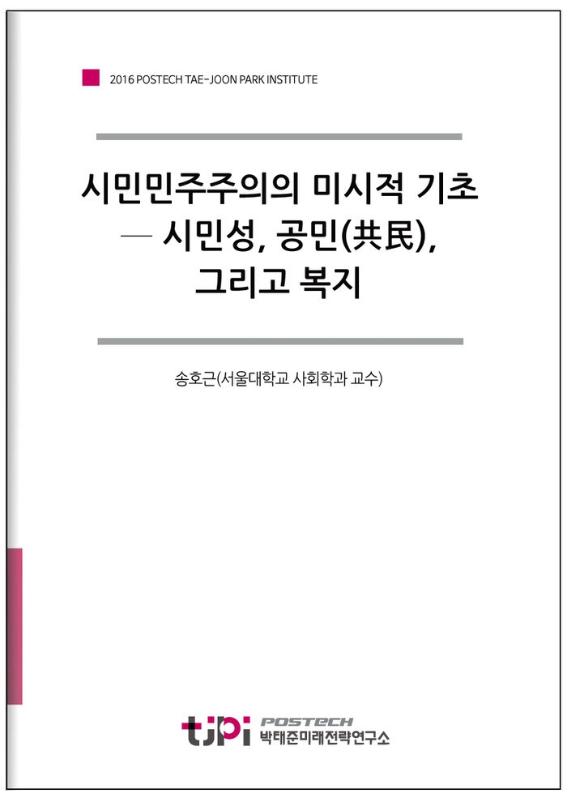

저자 송호근(서울대학교 사회학과 교수)연재일 2017.02.01

요 약
‘시민민주주의’는 요원한 것인가? 민주화 30년이 지난 시점에서 이 질문을 짚어봐야 한다. 우리는 어떤 양식의 민주화를 만들어 왔는가? 우리가 역점을 두었던 민주화 양식이 거시적 제도창출에 몰두한 것이었다면, 제도의 작동을 원활하게 하는 미시적 기초가 바로 ‘시민성’(civicness)이라는 데에 관심을 기울여야 하는 시점이다. 시민성은 ‘자치’와 ‘자발성’에서 비롯된다. 자발성은 자발적 단체(voluntary association)와 단체 활동(associational activity)의 산물이다. 그곳에서 생성된 합의는 모든 성원이 자발적으로 따르는 설득적 권위(persuasive authority)를 갖게 되고, 이는 강요(coercion)와 타의에 의한 동원권력이 자리 잡을 수 없도록 만든다. 민주주의가 더디지만 어떤 충격에도 잘 흔들리지 않는 단단한 토대를 갖게 되는 것은 이런 이유이다. --- 「‘시민민주주의의 미시적 기초─시민성, 공민(共民), 그리고 복지’(송호근)」 중에서
목 차
Ⅰ 복지는 왜 중요한가?
Ⅱ 초라한 우리들의 초상(肖像)
Ⅲ 시민과 시민사회의 이론구조
Ⅳ 동원의 정치와 운동론적 시민사회
Ⅴ 시민민주주의의 제도적 조건: 사회민주화와 복지
Ⅵ 시민민주주의의 미시적 기초
Ⅶ 시민교육 입법화: 독일의 정치교육
Ⅷ 결론: 시민성 배양과 시민교육 믿는다.
내 용
[2016 연구논문]시민민주주의의 미시적 기초─ 시민성, 공민(共民), 그리고 복지
송호근(서울대학교 사회학과 교수)
Ⅰ. 복지는 왜 중요한가?
지난 세기 경제성장의 모범국가로 세계의 관심을 끌었던 한국, 2차 대전 이후 선진국 클럽의 문을 두드린 유일한 후진 국가였던 한국이 21세기 들어 정체상태를 겪고 있다. 정체의 원인과 처방을 둘러싼 논란은 많지만, 이렇다 할 돌파구를 찾지 못했다. 국제적 우려도 만만치 않다. 중진국 내지 후진국은 한국이 성취한 산업발전에 여전히 부러운 시선을 보내고는 있지만, 선진국들은 한국의 강한 산업경쟁력마저 사회개혁의 지연 때문에 곧 쇠락할 것이라는 비관적 견해가 지배적이다. 일본은 1980년대 이후 경제기적의 시대를 마감하고 심각한 정체상태를 통과했다. ‘잃어버린 20년’으로 불리는 위기상황을 겪은 일본 마저도 한국이 이미 장기침체의 터널로 진입했다고 진단할 정도인데, 양국의 위기 상황에는 공통점과 차이점이 고루 발견된다. 경제적·정치적 리더십의 부재, 산업구조조정의 타이밍 유실, 사회적 활력을 재생산하는 제도적 기제의 미비 등이 양국의 침체를 불러온 공통적 요인이라면, 한국은 양극화로 인한 ‘격차사회’의 심화, 사회집단 간 이해갈등의 조정 실패, 공사영역에 팽배한 불신과 불만, 공익에 대한 긴장감 와해, 그리고 극대화된 사익추구 성향이 일본과 차이점이다. 일본 역시 해결해야할 사회적 쟁점이 누증 된 상태이기는 하지만, 한국처럼 각 영역 간 괴리가 현저한 것은 아니다.
21세기 자본주의의 구조는 경제부문의 개혁만으로 성장이 가능했던 과거의 법칙과 빠르게 결별했다. 제조업 시대, 일관공정에 의한 대량생산이 산업경쟁력을 좌우한 시대에는 건강한 노동력의 투입과 직무헌신이 경제성장의 핵심 요소였다. 경제성장은 자본, 노동력, 제도의 함수였다. 기업리더십, 노동력 재생산과 관리, 경제활동을 위한 근대적 인프라가 ‘제도’의 주요관심사인 시대에 구축했던 ‘성공패러다임’은 21세기 들어 ‘위기패러다임’으로 바뀌었다. 경제성장을 이끌었던 제도의 묶음을 ‘근대화’로 명명한다면, 근대화 지대를 훨씬 지난 오늘날 한국은 그 제도적 다발을 해체하고 새로운 제도를 창안해야 할 상황에 처해 있다. 아니, 그런 시기를 놓쳤다고 평가하는 게 적절하다.
근대화·산업화 시대에는 경제가 사회의 전반적 발전을 이끌었다면, 이제는 ‘사회가 경제를 이끄는 시대’가 되었음을 인식하는 것이 중요하다. ‘사회가 경제동력을 창출한다.’ 이 명제는 선진국의 역사적 경험이 입증한다. 1인당 국민소득 1만 달러 지대는 풍랑이 몰아치는 해협과도 같다. 성장의 결실을 어떻게 분배할지의 문제를 위시해서 산업구조 조정, 고급노동력 생산을 위한 교육개혁, 노후 생계안정과 청년실업, 각 인구집단별 복지수요의 폭증 등 공적 현안이 한꺼번에 폭발한다.
‘조정의 정치’가 그래서 작동한다. ‘조정의 정치’를 훌륭하게 수행한 정치지도자를 적시에 배출했고 그 결과 새로운 패러다임을 성공적으로 구축했다는 사실이 선진국의 공통점이다. ‘제국의 몰락’ 담론이 팽배했던 1980년대 미국의 레이건 대통령, 노조가 쌓은 정치적 장벽을 뚫고 신자유주의 개혁에 성공한 영국의 대처 수상, 일본의 경제기적을 이끈 나카소네 수상, 협치와 통일의 기반을 구축한 독일의 쉬미트 수상과 콜 수상이 그런 유형의 지도자다. 한 국가의 발전사에서 정치와 정치인의 중요성은 아무리 강조해도 지나치지 않은데, 그것을 조명하려는 것이 이 글의 목적은 아니다. 대신 조정의 정치가 수행했던 구조조정의 핵심부에는 ‘복지정치’(welfare politics)가 놓여 있다는 사실을 부각하고 싶다. 복지정치는 공적 혜택을 늘리고 나눠주는 ‘시혜의 정치’(politics of benevolence)가 아니다. ‘유권자의 표를 얼마에, 어떻게 살 것인지’가 복지정치의 본질이라는 정치학적 비판도 없지 않지만, 경제성장이 사회근대화의 견인차였던 시간을 지나 사회제도가 역으로 경제적 동력을 창출하는 시간대로 진입하는 과정에서 겪는 필수적 통과이례이자 전제조건이 곧 복지정치라는 점을 강조하고 싶은 것이다.
우리가 오늘날 ‘복지국가’(welfare state)라고 부르는 실체는 2차 대전 직후에 이념적, 제도적 기반이 조성되어 1960년대와 70년대 황금기를 구가했다. 수요를 창출해서 공급을 늘리는 것, 노동력 공급과 생계유지에 필요한 공적 혜택을 골고루 제공하면서 모든 사회성원에 인간다운 삶을 보장하는 것, 그리고 품격 있는 삶을 구상하고 영위할 수 있도록 포괄적 사회권(social right)을 부여하는 것이 복지국가의 기본 원리였다.
1950년대 전쟁의 폐허 위에서 인간의 존엄성을 회복하려는 복지정치의 구상은 세기말 독일에서 먼저 도입하고 다른 유럽 국가들로 확산된 사회보험(social insurance)이 기초가 되었음은 주지하는 바다. 의료, 연금, 산재, 실업보험으로 구성된 사회보험의 본래 의도는 노동계급의 혁명성을 순치하고 임금 및 생활보장을 통하여 산업경쟁력을 높이려는 데에 있었다. 2차 대전 직후에는 여기에 더하여 불평등 완화와 포괄적 사회권의 보장이 부가되었다. 사회권은 노동할 권리(경제권)를 넘어서 건강한 사회생활을 영위하는 데에 필요한 각종 공적 서비스, 예를 들면 교육, 육아, 질병 치유, 노후 보장, 소득이전, 취업 및 적응훈련 등을 포함하는 광범위한 혜택을 수혜할 권리를 의미한다. 그것은 자본주의의 가장 중대한 취약점인 불평등을 완화하고(불평등 개선), 노동력을 팔아 생계를 이어가도록 강요하는 시장의냉혹성을 규제하며(노동력의 탈상품화), 궁극적으로는 새로운 계층체계를 만들어내는 데에 목적이 있었다(신계층체계). 간략히 말하면, 자본주의의 순치였다.
포괄적 사회권을 보장하는 이른바 ‘케인스적 복지국가’(Keynesian welfare state)는 1960년대와 70년대에 황금기를 구가하며 유럽 각국에서 새로운 계층체계를 만들어 내는 데에 성공했다. 이 기간 동안 대부분의 유럽국가에서 불평등 수준은 물론, 실업률, 노동파업, 계층 간 불화, 사회갈등이 현저하게 하락한 반면, 경제성장률, 산업경쟁력, 사회연대감과 정치안정성은 역으로 향상됐다. 물론, 북구, 중부유럽, 남부유럽 간 정도의 차이는 있지만, 주택시장에 이르기까지 국가의 공적 규제를 적용했던 케인스적 복지국가는 사회제도의 재설계(redesign)를 통해 경제동력을 창출한 20세기의 대표적 발명품이라는 데에 대체로 동의한다.
복지국가의 내부 동학(動學)에 대해 자세히 말할 자리는 아니다. 이 글의 주제인 시민성, 공민(共民) , 시민민주주의와 관련하여 복지정치가 어떤 함의를 갖고 있는지를
조명하는 것이 중요하다. 즉, 유럽의 복지정치가 무엇을 중심축으로 작동하고 있는지, 어떤 사회적 심성(social sentiment)과 시민성을 배경으로 하는지를 알아야 오늘날 한국이 당면한 문제를 푸는 실마리를 발견할 수 있다.
유럽 복지정치는 ‘고용’을 제일 원리로 삼고, 무엇보다 ‘완전고용’(full employment)을 가장 중요한 목표로 설정한다. 복지국가의 전형인 스웨덴의 경우 사민당이 집권한 1924년부터 지금까지 한 번도 ‘완전고용’을 정 강 제1조에서 내린 적이 없다. 자본주의에서 완전고용은 이론상 불가능하지만 정치적으로는 가능하게 만들겠다는 의지를 포기한 적이 없고 국민들도 그렇게 믿는다. 임금정책과 노동시장정책이 스웨덴 복지국가의 중핵이다. 이렇게 말하면, 당장 한국적 담론과는 어긋난다고 반박할 것이다. 한국에서는 복지가 고용을 해치는 비용으로 인식되기 때문이다. 복지는 세금이고, 기업과 국민의 세금부담이 늘어나면 고용능력과 소비수준이 하락한다. 따라서 복지는 고용을 해친다는 것이 한국적 담론의 논리이다. 그러므로 복지정치가 거론될 때마다 기업, 고용주, 상층계급의 반대가 거셌다. ‘복지는 세금이고, 세금은 경기하락을 가져 온다’는 한국적 등식은 틀렸을 뿐 아니라 국가의 시장개입에 저항하는 자유시장적 이념의 소산이다. 노동계급 역시 임금인상과 동시에 복지증진을 외치는 것도 논리적으로 옳지 않다. 복지는 ‘완전고용’과 결합된 종합 처방이다. 후술하겠지만, 시민성, 공민개념의 역사적 형성과정이 생략된 채 산업화에 성공한 한국적 상황이 이런 뒤틀린 복지등식을 고착시켰다.
케인스적 복지국가의 요체는 ‘더불어 사는 시민’(共民)개념으로부터 나온다. 그렇지 않으면 어떻게 소득이전(income transfer)이 가능한가? 부유층의 소득을 하층민에게 이전하는 제도는 시장 규제적이고, 계층격차 줄이기다. 부유층이 그렇게 동의했고, 하층민은 즐겁게 받는다. 다만, 양 계층의 합의가 필요하다. 부유층은 세금을 더 냄으로써 사회적 화합이 이뤄지기를 원하고, 하층민은 더욱 열심히 사회에 헌신할 것을 서약한다.
세금은 중요한 사회적 계약이다. 자신의 재산권을 일부 양보하는 것, 자신의 소득을 양보하는 도덕적, 윤리적 심성은 하루아침에 이뤄진 것은 아니다. 역사적 형성배경을 갖고 있다. 19세기 자유주의사회를 건설하는 과정에서 한편으로는 귀족계급의 특권과 투쟁하면서, 다른 한편으로는 노동계급의 도전을 수용하면서 배양된 시민계급의 덕성(virtue)이 복지국가의 이념으로 승화된 것이다.
복지제도는 노동계급 정당이 지배정당으로 등극할 때에 가장 빛을 발하지만, 중산층 혹은 중간계급의 동의가 없이는 실현되지 않는다. 그런 의미에서 복지국가는 중산층의 합의정치라는 에스핑 엔더슨의 명제는 여전히 유효하다.
역사적으로 시민은 항상 도덕적인 존재는 아니다. 이기심과 경쟁심으로 무장하고 재산권을 지키기 위해 온갖 투쟁을 마다하지 않은 존재가 시민이었다. 그러나 지난 200여 년 간 지속된 계급투쟁과 국가 간 전쟁, 산업경쟁의 소용돌이 속에서 ‘양보와 헌신’이 사회적 결속과 연대감을 증대한다는 지혜를 습득했다. 복지국가는 ‘양보와 헌신’이라는 시민성의 핵심덕목으로 작동하는 평등기제다.
그렇지 않으면 ‘복지정치의 방정식’을 설명할 길이 없다. 복지와 고용을 길항관계로 파악하는 한국적 담론과는 달리, 유럽에서 복지제도의 전제조건은 임금양보다. 임금양보가 없으면 고용증대가 불가능하기 때문이다. 고소득층의 임금양보! 복지정치는 이로부터 시작한다. 고소득 임금생활자의 임금양보는 기업의 지불능력을 키워주고 이는 곧 고용증대로 나타난다. 고용증대는 세수자원을 확장해서 국가 세수를 늘린다. 늘어난 세수는 사회적 임금(social wage)으로 불리는 복지혜택으로 변해 임금양보를 수락한 계층을 포함하여 모든 사회구성원들에게 공적 혜택으로 돌아간다. 즉, 임금양보=고용증대=복지(사회적 임금)라는 등식이 성립되고 이 세 요소는 서로 원을 그리는 선순환관계를 맺는다. 따라서 복지는 고용이며, 계층 간 격차를 줄여 새로운 계층체계를 만들어낸다. 적대감을 낳는 계급연대가 아니라 계급 간 화합을 이루는
사회연대감(social solidarity)이 증대하는 이치이다. 한국이 당면한 불평등과 차별, 양극화, 고실업율, 청년문제와 저출산 등의 중증 질환을 유럽 국가들은 임금양보를 전제로 완전고용을 추구하는 복지정치를 통해 해결하고 있으며, 그것을 운용하는 사회적 심성이 오랫동안 역사적으로 형성해온 시민성(civicness) 내지 시민 덕성(civic virtue)이라고 할 것이다. 복지정치가 만능키는 아니지만 적어도 산업화와 민주화를 거친 이 시점에서 한국사회를 옥죄는 당면 현안을 풀어내는 데에 사회적 재설계가 필수적이라면, 이를 구상할 때 반드시 짚어야할 전제이자 이 글을 시작하는 출발점이다.
Ⅱ 초라한 우리들의 초상(肖像)
민주주의의 종주국인 미국은 ‘월가 자본주의’(Wall─Street Capitalism)로 불리는 신자유주의의 부정적 효과를 축소하기 위해 많은 개혁조치를 단행해 왔다. 신자유주의는 시장을 활성화하는 장점이 있기는 하지만, 노동자와 임금생활자를 자본의 지배 영역 내부로 묶는 강한 구속력을 발휘한다. 국가와 시민사회에 대한 자본의 지배력이 증대한다는 비판에도 불구하고 시장의 자유를 확산시켰던 이면에는 세계경제를 침체국면에서 탈출시켜 성장혜택을 지구촌 곳곳이 누리게 한다는 이념이 깔려 있다. 신자유주의가 한창 성장가도를 달리던 1990년대, 미국 학계에서는 ‘미국정신의 실종’을 경고하는 비판적 연구들이 쏟아졌으며, 공동체 정신의 부활과 시민윤리의 회복을 정책대안으로 내놓았다. 결국 신자유주의의 단점이 드러났다. 2008년 미국 금융계를 강타한 금융위기는 월가 자본주의의 도덕적 해이가 낳은 예견된 재앙이었다. 수학자와 금융공학자들이 고안한 수십 가지의 파생상품과 헤지 펀드, 그리고 그것의 위험(risk)을 재상품화한 3차, 4차 파생상품의 범람은 역사상 유례없는 금융버블을 만들어냈는데, 일반 서민에게까지 확산된 부동산투자가 급작스런 집값 하락에 의해 제동이 걸리자 파생상품의 거품이 만천하에 드러났다. 이른바 서브프라임 모기지(Subprime Mortgage)
사태가 그것이다. 수많은 주택구입자는 집을 잃고 거리로 나왔으며, 투자자가 거액의 투자금을 날렸다. 그러자 리먼 부라더스(Lehman Brothers) 같은 월가의 지배적 금융기업들이 파산에 직면했다. 그 여파는 금융업에 진출했던 글로벌 자동차기업 GM(General Motors)의 파산을 몰고 왔으며, 포드(Ford) 역시 산업경쟁력을 잃었다. 일종의 도미노현상이었다.
글로벌 금융기업들이 창안한 파생상품은 공동체정신과는 거리가 먼 지극히 파괴적인 탐욕의 산물이다. 다른 투자자들의 손해를 헤지(hedge)해 이득을 얻는 부도덕한 상품들의 리스트를 일별한다면, 프로테스탄트 정신에서 자본주의 윤리의 발생기원을 찾아낸 막스 베버(Max Weber)는 아마 할 말을 잃을 것이다. 2015년 미국 대선에서 민주당 후보로 나선 고령의 버니 샌더스(Bernie Sanders)가 열풍을 일으킨 것도 이와 무관하지 않다. 일반 서민들이 겪는 냉혹한 현실을 적시한 그의 연설은 미국이 과거의 풍요하고 평등지향적인 이미지로부터 멀리 이탈했음을 일깨웠다. 통계적 사실에 근거한 그의 주장은 충격적이다. 우선, 지난 40년 동안 미국의 중산층은 빠르게 몰락해서 하층과 빈곤층에 합류했다. 중위소득은 1999년에 비해 5천 달러가 하락했으며, 중산층 가정의 평균 소득도 2005년 13만 달러에서 8만 달러로 거의 36% 감소했다. 이에 반해 최고 부자 15명의 자산은 하위 40% 자산을 합친 것보다 더 커졌으며, 톱 0.1% 초부유층이 총자산의 22%를 장악했다. 하위 90%, 그러니까 대다수의 미국인은 자산점유 비율이 36%에서 22%로 떨어졌다. 한마디로 말하면, 미국은 정의로운 사회가 아니다. 청년실업률이 급증한 것, 취업자들의 생활이 훨씬 더 곤궁해진 것, 빈곤층이 비싼 의료보험에 접근할 수 없는 이유도 모두 이런 자본주의의 부도덕성, 공동체 정신의 상실 때문이라는 지적에 미국 대학생과 젊은 층은 동의의 박수를 보냈다. 버니 샌더스의 해법은 간단했다. 더 많은 세금을 거둬 사회간접자본, 무상교육, 사회보장, 의료보험에 할애하는 것, 사회보장(social security)의 강화가 정의로부터 멀어진 미국사회를 구제하는 대안이었다.
그런데 사회주의자로 분류된 샌더스가 온건하게 설파한 미국 현실이 한국과 그리 먼 곳에 있지 않다는 사실은 놀랍다. 샌더스는 청년실업률을 말했다. 한국은 그 이상이다. 그는 소득불평등을 말했다. 한국은 미국 다음으로 불평등한 국가다. 상위 10%가 45%의 소득을 독식한다. 미국은 48%다. 한국이 건강보험 모범국이라 하지만 중병에 걸리면 파산 위험이 급증한다. OECD 국가 중 노인빈곤율, 자영업 파산율, 자살률이 최고다. 거기에 대기업과 중소기업 양극화, 도농격차, 재벌기업 집중률을 더하면 샌더스조차 의아해 할 일이다. 이런 사회가 유지되는 건 기적이라고 말이다. 한국의 현실을 깊숙이 파헤치면 과연 기적이라고 말해야 한다. 정치권에서, 학계에서, 경제계에서, 언론과 일반 시민사회에서 개혁방안을 논의해 왔지만 이렇다 할 해법은 아직 묘연한 상태다. 그러는 가운데 이기적 경쟁에 몰입한 우리들의 초라한 초상이 속속 드러나고 있다.
예를 들어 조선업 사태를 보자. 조선업은 세계 최고의 경쟁력을 갖춘 한국의 주력산업이었다. 그런데 수주절벽과 유가하락으로 인하여 지난 몇 년간 적자상태를 면치 못했고, 급기야 파산직전에 내몰리자 대규모 구조조정의 필요성이 제기되었다. 정부는 조선 3사가 자구책을 구상하고 실행하는 조건으로 12조원에 달하는 막대한 공적 자금의 투입을 결정했다. 구조조정은 경쟁력을 상실한 부문의 매각과 정규직·비정규직의 대량 해고를 명시했다. 그러자 조선 3사 노조의 거센 반발과 저항이 잇달았다. 정규직 해고는 절대 수용할 수 없다는 것이 노조의 요구안이었다. 몇 년 전부터 전국금융노련과 3사 조선노련이 조선업의 경쟁력 회복과 지속가능성을 위한 구조조정안을 경영진과 정부에 거듭 촉구했지만 번번이 외면당한 이력이 있기에 정부권고안에 대한 노조의 거센 저항은 일리가 있기는 했다. 그런데 절체절명의 위기상황을 만들어낸 공동책임자로서 노조가 울산과 거제를 고용위기지역으로 지정하라고 요청하는 행위와 정규직 해고 절대 불가를 외치는 행위가 과연 도덕적인지는 따져봐야 한다. 파산의 책임은 우선 경영진에게 있다. 경영진에 대한 냉혹한 책임추궁을 전제로 한다면, 노조 역시 파산의 책임을 면할 수는 없다.
‘고용위기지역’ 지정 요구는 실직위험에 처한 10만 명에 달하는 협력업체와 하청 인력의 구제를 염두에 둔 일종의 배려였다. 그러나 공적 지원을 요청하기 전에 자성(自醒)이 먼저여야 했다. 조선업 호황이 지속된 지난 20년 간 정규직 노조는 느닷없이 닥쳐올 비상사태에 어떤 대비를 해왔는가? 비정규직과 하청 인력을 실직 위험으로부터 보호하기 위해 어떤 실효성 있는 정책대안을 마련했는가? 대우조선해양에서 보듯, 경영진과 정부의 임기응변적, 이기적 정경유착은 사회적 비난을 받아 마땅하지만, 노조 역시 그런 도덕적 비판으로부터 자유로울 수 없다. 왜냐하면 정규직 노조는 하청 인력 위에 군림했기 때문이다. 임금은 물론, 물량 분배, 작업장에서의 노동 분업, 각종 복지혜택, 그리고 고용안정에 이르기까지 정규직은 비정규직의 노동을 활용했다는 비판을 결코 면할 수 없다. 더욱이 조선업 정규직은 연봉 1억 원에 가까운 고소득자들이다. 고임금과 고용안정을 한꺼번에 보장받았던 이들이 위기사태라고 해서 공적 자금이라는 국민혈세에 호소한다는 것은 부도덕과 부정의의 전형적 사례다. 그러나 한국에서는 이런 일이 다반사로 일어나고 또 당연한 지원책으로 인정된다는 것이 문제다.
필자가 조선업 사태의 원인 규명을 위해 울산과 거제를 현장 조사한 결과 내린 결론은 그러했고, 이런 사실을 칼럼으로 썼다.
작업현장의 ‘도덕적 해이’는 극에 달한다. 수백 개로 쪼개진 분절구조에서 정규직은 하청근로자를 부리는 감독이고, 쉽고 안전한 작업을 골라 맡는다. 직영정규직과 하청근로자간 기술격차는 없지만, 직영은 각 부서의 군주, 급여도 연 3~4천만 원 더 받는다. 협력업체 사장은 직영감독의 눈치를 봐야 계약을 연장할 수 있다. ‘직영사원의 제국(empire)’이 따로 없다. 예전에 직영으로 가는 딱지가 3천만 원 선에서 거래됐다. 직영이 누리는 복지혜택은 상상을 초월한다. 자녀학자금은 물론, 부모 의료비, 명절과 휴가상품권, 백화점 할인은 상식이다. 하청근로자는 꼽사리 인생이다. (중략)
올해, 울산 노조는 임금복지 인상안을 협상의제로 올렸고, 거제지역 노조는 고용위기지역 지정을 공식 요청했다. 잘 나갈 땐 뭐하고, 이제 와 볼멘소리인가? 독일 금속노조처럼 조업단축, 노동시간계좌제, 자체 실업기금 등을 미리 준비했다면, 돌아서는 하청근로자를 구제할 수도 있는데 왜 서민에게 손을 내미는가? 채권을 사줄 한국은행 돈은 혈세다. 목포 대불산단과 남해안 지역 협력업체 근로자들은 월 300만원으로 살았다. 이제 가동이 멈췄다. 돈 잔치했던 원청 3사 직영들에게 일감독식과 고소득을 보장해주는 빚잔치는 정의로운가? 부잣집에서 쏘아 올린 SOS, 붕괴현장의 착잡한 현실이 이렇다.
조선 3사는 정부의 구조조정 권고안에 명시된 ‘정리해고’를 강력 반발해 파업찬반 투표를 실시했고 결국 파업에 돌입했다. 이미 하청 인력 2만여 명이 실직한 상태에서 대량해고의 충격파가 자신에게 밀려오는 것을 견디지 못했다. 실직은 일종의 ‘사회적 죽음’(social death)이다. 부당한 해고조치에 맞서지 않을 임금생활자가 어디 있겠냐만, 약자인 하청 인력을 위해 강자인 정규직 노조가 무엇을 해왔는지, 그리고 정규직 사원들이 호황 20년 동안 어떤 자체 대비책을 강구하고 실행했는지를 먼저 묻고 싶은 것이다. 동류의식, 동반의식, 그리고 공존의식이 결핍된 한국의 초라한 자화상인데, 다른 영역도 이와 다를 바 없다는 자각이 우리를 슬프게 한다.
전 국민의 가슴을 울린 슬픈 사건은 일상적으로 일어난다. 2016년 5월 28일, 서울 구의역에서 지하철 승강장 스크린도어를 홀로 수리하던 외주업체 노동자가 진입하는 전동차에 치여 숨졌다. 당시 19세 청년인 그는 서울 지하철공사의 계약직 알바생으로 열악한 작업환경과 부실 감독의 희생자가 됐다. 부실 감독이라기보다 위험하고 단순한 작업을 저임금 협력업체 노동자에게 외주해온 한국적 악습이 빚어낸 사건이었다. 정작 메트로 출신 재취업자들은 궂은 육체노동을 비정규직에게 떠넘기면서도 400만 원 상당의 고임금을 받은 반면, 1시간마다 작업현장을 옮겨 다녀야 하는 냉혹한 계약을 감수한 19세 청년은 144만 원을 지급받은 사실이 드러났다. 숨진 청년의 가방에서
컵라면이 발견돼 세간의 동정을 샀다. 며칠 뒤인 6월 1일, 남양주 지하철 공사장에서 폭발사건이 발생해 인부 4명이 숨지고 10여 명이 부상을 입었다. 사고의 원인은 안전수칙 무시였는데, 사상자들은 대부분 한국철도공사 발주, 대기업 시공, 하청업체 '매일ENC'가 공사를 담당한 하청 사슬의 비정규직이었다. 이 역시 감독 소홀과 작업자 과실이 겹쳐진 사건이나 정작 피해자는 비정규직 노동자였다는 사실에는 변함이 없다. 한국사회에서 비정규직은 신분차별보다 더 강력한 경계선이자 삶의 기회와 질을 양극화하는 성벽과 같아서 불평등사회와 격차사회의 냉혹한 징표다. 이런 인위적 구획선을 그대로 방치하면서 공동체적 삶을 회복해야 한다고 외치고, 청년에게 일자리를 줘야 한다고 힘줘 강조하는 모습은 모순이자 기만이 아닐 수 없다.
한국사회의 초미 관심사가 된 청년 일자리만 해도 그렇다. 한국사회가 내린 특명은 ‘대한민국 청춘을 구출하라’다. 그런 명분하에 2015년 100여 차례의 회의, 물밑 접촉, 기싸움, 결렬을 거듭한 끝에 노사정대표들이 합의문에 도장을 찍었다. 오랜만에 보는 타협정치였다. 멱살잡이에 공중부양, 욕설로 기억되는 여의도정치에 비하면 늠름하고 성숙한 풍경이었다. 숨통을 트지 않으면 한국사회가 질식한다는 위기감을 공유했고, 자식세대에게도 인간적 존엄성을 유지할 환경을 만들어줘야 한다는 절박한 공감대가 없었으면 불가능한 일이었다. 1998년 외환위기 이후 시민사회가 빚은 사회적 대타협이었다.
그런데, 청춘은 구출되었는가? 버려진 청춘들을 거뒀는가? 필자가 내린 답은 불행히도 ‘아니다’. 노동은 챙겼고, 사(使)는 비용부담을 떠안았다. 핵심뇌관은 여의도정치로 이관되었다. 청년고용에 가장 중대한 ‘일반해고’와 ‘임금피크제 포함 취업규칙 변경’ 건을 협의한다고 합의했다. 타협에 무능한 여의도 와류(渦流)에 던져 넣자고 합의한 것이다. 대타협의 정신을 지키라는 국민들의 눈초리가 매섭기는 하지만 국회 환노위에 포진한 야당 강경파의 거부권과 민노총의 협박이 드세다. 왜 ‘청춘 구하기’에 실패했냐고? 경제학자라면 이렇게 답할 것이다. 신규 채용에는 기업의 지불능력이 가장 중요한데,
국회로 이관된 사안을 합의한다 해도 그리 변화는 없다고 말이다. 노동시간을 200시간이나 양보했는데 무슨 소리냐고 할 것이다. 실제로는 연장근로할증료를 50%에서 100%로 올려 비용삭감 효과는 별로이고, 여기에 통상임금 범위를 확대하고 실업급여를 10% 올렸다. 임금피크제가 도입되지 않으면 ‘60세 고용연장’은 폭탄이다. 비록 노동계가 시간을 양보해도 소득보전의 참호에 버티면 ‘청춘 버리기’ 전선엔 아무 이상이 없다. 또한, 재계의 요구인 일반해고가 입법화되면 비용절감엔 약이지만 고용안정에는 독이다. 노(勞)의 처우개선과 사(使)의 일반해고가 맞바꿔진 양상인데 이게 ‘청춘 구하기’에 얼마나 도움이 될지는 따져봐야 한다. 이래저래 딜레마다.
사회학적 관점에서 ‘청춘 구하기’ 방정식은 노동/자본의 협상프레임만으로는 풀리지 않는다. 한시적이나마 ‘상위소득자의 임금 동결’, ‘정규직의 특권 양보’, ‘노동의 헌신을 신규채용으로 보답하는 사(使)의 노력’, 이 삼박자를 결합하는 범사회적 결단이 필요하다. 공장과 기업에게 이 난제를 풀라고 압박하는 사회는 이기적이고 비정상적이다. 조직부문 상위 20%, 약 2백만 명의 임금양보, 공기업과 정부 공무원들의 임금피크제 동참, 교사와 교수들도 조기퇴직이나 임금피크제를 수용해야 시든 청춘에 생기를 불어넣는다. 대한민국의 모든 철밥통이 나서야 풀린다. 양보한 자에게 선별적으로 제공하는 정부의 복지정책도 주효할 것이다. 기성세대의 양보와 자제 없이 궁핍한 후속세대를 구하지 못한다. 영국 오페라 스타 폴 포츠가 자비로 한국에 날아와 피곤한 청춘들을 위문 공연했다. 정작 우리 사회는 뭘 내놓았는가?
이기적 경쟁심과 독점의식에 의해 발생하는 일그러진 자화상은 도처에서 발현한다. 부자 동네로 알려진 강남에서 아파트 경비원이 자살한 사건이 발생했다. 경비 비용을 아끼려고 경비원을 상대로 재계약을 강요했는데 그런 조치에 불응하는 경비원들에게 주민자치회가 일괄해고통지를 보낸 것이 화근이었다. 속사정을 들어보면 양측 모두 할 말이 많을 것이다.
경비원이 근무태만이거나 주민이 하대했을 가능성이 있다. 민주노총의 재빠른 개입이 주민의 경계심을 촉발했을지도 모른다. 실제로 고용연장과 최저임금 보장이라는 민주노총의 강수(强手)에 주민은 계약파기로 맞섰다.
경비원은 최저임금 이하의 월급에 혼신의 힘을 쏟지 않고, 주민은 월 2만원 추가부담을 아끼려 해고를 불사했다. 강남 부자동네에서 공존의식은 증발했고 ‘더불어 사는 시민’ 개념은 흔적이 없다. 오히려 국민 개념이 난무한다. 부자 동네에서 일어난 저 치졸한 장면은 모두 개별화된 ‘국민’으로만 살아온 탓이다. 국가 명분에 수직적으로 동원된 원자화된 개체인 국민은 수평적 관계에는 한없이 미숙한 존재다. 동시대를 사는 사람끼리 주고받는 자제와 양보의 미덕, 공존의 지혜를 배양하지 못한 증거이기도 하다.
더 이상 떠올리고 싶지 않은 저 세월호 사건은 공존의 미덕, 자발적 시민성(civicness)의 결핍이 어떤 무서운 결과를 초래하는지를 보여주는 서글픈 자화상이다. 당시 68세의 선장 이준석이 300여 명의 어린 학생들을 두고 승무원들과 함께 난파선을 먼저 탈출했는지를 모든 사람들은 의아해했고 안타까워했다. 선장에 대한 분노를 주체할 수 없었을 터이지만 어느 순간 자신도 이준석과 같을지 모른다는 생각에 섬뜩함을 느꼈을 것이다. 일리 있는 추론이다. 필자도 아픈 가슴을 부여잡고 그 파렴치한 행동을 이해하느라고 애를 먹었다. 필자의 잠정적 결론은 이 글의 취지와 직결된다. 선장 이준석은 평생 수평적 관계를 맺지 못하고 살았다. 다만, 자신과 가족, 가족과 회사, 회사와 국가라는 수직적 관계에서 의식을 형성했고 행동수칙을 익혔다. 비상 시 선장의 의무는 여객선 항로와 상태를 관리하는 정부기관, 해경관측소, 여객선 관리소에 연락을 취하고 지시에 따르는 일로 충분했다. 사건 당일에도 그런 마음 상태를 유지했을 터인데, 갑판에 나와 보니 해경 소속 헬리콥터와 구조선이 눈에 띄었다. ‘국가가 왔다!’ 국가가 있는 한 자신의 할 일은 소멸됐다. 어린 학생들의 생명은 국가가 책임질 터이니 자신은 자신의 생명만 보존하면 된다는 생각 외에 다른 의식은 없었을 거다. 그래서 탈출했다. 해경 구조선을 타고 말이다. ‘의식 없음!’(thoughtlessness)은 나치 치하 유대인의 대량학살을 감행한 나치 대원이나 사령관급 책임자에게 공통적으로 발견되는 사고방식이다. 또는 난징학살에 황도황종(皇道皇宗)의 명분을 갖다대는 일본 제국군대 사령관의 사고방식에서도 그런 유형이 스며 있다.
‘의식 없음’은 책임전가 내지 무책임의 전통에서 발원하고, 그것은 모든 행동과 규범을 상위명제인 국가와 결부시킬 때에 정당화된다. 이준석은 수직적 관계에 매몰된 ‘국민’이었다. 그럴 경우 이웃, 공동체, 더불어 사는 사람들에 대한 배려가 완전히 결핍된 이기적 인간이 된다. 국가에 대한 애국심은 있을지 모르나, 수평적 관계에 대한 권리와 의무, 즉 시민성에 대해서는 무지한 인간이다.
우리의 초라한 자화상을 애써 환기한 이유는 시민성, 공존의 지혜를 갖춘 ‘시민’이 중요하다는 사실을 자각하기 위함이다. 이기적 심성, 경쟁과 독점, 불평등과 격차─이런 부정적 독소가 무성하게 번식한 한국사회에서 더 이상 경제성장은 불가능하고, 어렵게 성장 동력을 찾아내더라도 사회를 옥죄는 누증된 모순을 혁파하지 않고는 투쟁사회가 지속된다. 이것이 왜 이 시점에서 ‘시민’인가, ‘시민성’인가를 자문해야 하는 이유다. 우리가 매진해 왔던 ‘국민’으로 충분하지 않은가? 아니다. 마치 피륙이 씨줄과 날줄로 짜지듯, 사회 역시 ‘공동체적 연대’(시민)와 ‘국가에 대한 헌신’(국민)으로 엮어진다. 하나가 빠지면 허술하다. 미국 대통령이 ‘친애하는 시민’, 프랑스 대통령이 ‘친애하는 동지’로 호칭하듯, 미국인과 유럽인들은 국민보다 시민에 더 익숙하다. 국민이 되기 전 먼저 시민으로 성숙했기 때문이다. 한국사회가 당면한 제반 모순과 폐단을, 우리의 일그러진 자화상을 ‘시민성’으로 교정할 수 있다고 주장하는 것은 아니다. 다만, 사회적 재설계가 절실한 현 단계에서 우선 고민해야할 시대적 과제가 바로 시민성 배양이다.
시민성은 ‘공존의 지혜’이자 ‘더불어 사는 시민’(공민)으로 진전하는 통로다. 제도는 만들어낼 수 있다. 그러나 제도의 작동은 ‘규칙’만으로 되지 않는다. 규칙을 지키고자
하는 사회성원이 의무감으로 충만해야 한다. 개인의 업무(사익)에 충실할 때 공익은 저절로 창출된다는 아담 스미스(A. Smith)의 ‘보이지 않는 손’(invisible hand) 개념은 도덕적 개인을 전제하지 않고는 성립되지 않는다. 모든 개인은 자기애(自己愛)를 갖는다. 사익과 욕망에 충실한 존재다. 그러나 공감능력(sympathy)을 발휘해 자기절제, 관용을 내면화하지 못하면 보이지 않는 손은 허구일 뿐이다. 아담 스미스는 이기적 개인을 이타적 존재로 승화하는 지적 덕성(intellectual virtue)으로 공감능력을 중시했다. 이것이 시민성의 덕목인데 한국인과 인연이 없는, 멀리 떨어진 가치가 아니다. 유럽의 사회이론가들이 예외 없이 고민했던 시민사회의 가장 본질적인 덕목이 시민성, 시민윤리라고 하는 가치관이다. 시민성은 무엇인가? 본격적으로 고찰할 차례가 되었다.
Ⅲ 시민과 시민사회의 이론구조
한국의 대통령이 ‘시민’이란 단어를 쓰는 경우는 오직 특정 도시주민을 지칭했을 때에 한정된다. ‘전주시민’ 혹은 ‘대구시민’이다. 정부의 공식 언어도 마찬가지다. 경남지역 신공항 분쟁을 김해공항 신축으로 종결지었을 때에도 ‘부산시민이나 대구시민께서 이해해 달라’는 것이 대변인의 공식 언명이었다. 이 표현에는 시민성은 없고 대신 지역성이 있을 뿐이다. 한국에서는 도시 주거민이 시민이고, 농촌 거주자는 농민이다. 이런 어법은 사실상 일제 식민지시대로부터 한 발짝도 나아가지 못한다. 20세기 초반에 등장한 보편적 시민개념은 일제 통치와 함께 즉시 거주지 개념으로 한정되었다. 일제시대 발행된 신문에는 ‘시민대회’, ‘시민운동회’와 같은 근대적 개념이 자주 등장하는데 대부분 특정 도시에서 일어난 사건 보도였다. 예를 들어 동아일보 기사에 이런 표현이 나온다.
費 三百圓도 全部市民들의 義捐金으로써 開催케되었을 뿐아니라 運動競技者들도 可及的 市民을 參加케함이 當然한事이어늘 ...
의주에서 시민대회 운동회를 하는데 발기인의 독단운영으로 시민참여가 배제되었다는 고발기사이다. 시민은 의주시민이었다. 앞에서 예를 든 전주시민, 대구시민과 다를 바 없다. 그런데 보편적 시민 개념이 투영된 용법도 가끔 사용하기는 했다. 예를 들면,
다음 沙里院市民에게 告하노니 沙里院의 敎育施設의 不完全한 것은 當局의 責任이나 市民 또한 一部의 義務를 負하지 아니치 못할 것이다 子女가 市民의 子女요 將來의 國民이 市民의 國民이어늘 私學을 增設한다던지 普校, 中等校增設運動을 한다던지하야 一日이라도 入學難을 緩和해야 할 것이 아닌가 ...
‘사리원시민’이란 용법은 마찬가지인데, “자녀가 시민의 자녀요 장래의 국민이 시민의 국민이어늘”에서는 시민은 국민의 질료이고 시민됨이 국민됨의 요소라는 보편적 인식을 담고 있다. 그러나 일제 식민통치가 양자의 긴밀한 관계를 배양하는 기반을 파괴했기에 시민개념은 보편적 함의를 얻지 못했다. 바로 이 문제가 우리가 찬찬히 따져 봐야할 역사적 연구과제인데, 이에 대해서는 다음 장에서 고찰하기로 하고 이 장에서는 서양에서 시민의 형성과 시민사회론의 핵심 논리를 간략히 살펴보기로 한다.
1831년, 인류역사상 최초의 근대적 정치혁명으로 불리는 프랑스혁명이 발발한 40여 년 후 프랑스의 한 지식청년이 미국을 여행했다. 알렉시토크빌(Alexis de Tocqueville, 1805~1859)이란 26세 청년이었는데, 미국의 연방감옥제도를 연구하려는 것이 목적이었다. 10개월의 여행에서 그는 놀라운 사실을 발견했다. 국가도 국가권력도 취약하기 짝이 없는 미국에서 사회질서는 잘 유지되고 주민들도 법과 규범을 잘 지키고 있었다. 역사적 전통이 길고 무거운 프랑스와는 달리 타운십(Township)이란 자치제도가 작동하는 모습은 그에게는 사뭇 감동적이었다. 타운십은 주민자치제도로서 중앙집권적 국가권력을 대신해 사회문제와 쟁점은 물론 자연재해 극복에도 탁월한
효율성을 보여 주었다. 사회적 갈등이 발생하거나 분쟁이 발생하면 곧장 정부로 달려가 하소연하는 프랑스나 영국과는 달랐다. 미국인은 국가에 의존하지 않았다. 촌락의 문제는 토론을 통해 스스로 해결했고 향후 문제를 해결할 행동강령을 만들어 실행했다. 그런 ‘마음의 습관’(habits of the heart)이 미국인의 심성에 장착되어 있었다는 사실에 토크빌은 놀라움을 금치 못했다. 국가는 자치제가 십시일반 모여 만든 권력체에 불과했다. 지방자치에서 유능한 사람을 선출해 국가에 빌려주는 개념이다. 토크빌은 그들을 유럽처럼 관료(bureaucrats)가 아니라 의견을 조정하고 실행하는 기능인(functionaries)으로 불렀다. 지방자치라는 토대 위에 연방제 국가가 서 있었던 것이다. 미국에서의 이런 경험은 토크빌로 하여금 국가권력에 대한 부정적 평가로 이끌었다. 그는 1835년 저술한 대작 『미국의 민주주의』에서 이렇게 썼다.
전능한 권력은 본래 사악하고 위험한 것이다. 인간은 그런 권력을 분별력 있게 행사할 수 없다. …… 절대적 지배를 행사할 수 있는 권리와 수단이 국민이나 군주, 귀족정치나 민주정치, 군주정이나 공화정이건 어느 권력에 부여되든 거기에는 폭정의 씨앗이 있다.
인간은 전능한 권력을 분별력 있게 사용할 수 없는데, 미국의 자치제도는 합의된 권력을 만들고 스스로 복종한다는 점에서 시민권력의 윤리적 본질을 함축한다. 그러므로 ‘제도’로서의 민주주의보다는 주민과 시민들이 내면화한 가치관과 행동규범, 즉 ‘마음의 습관’이 더 중요하다는 사실을 체득했다. 그런 마음의 습관은 인종과 직업을 뛰어넘어 ‘제 조건의 평등’(equality of all conditions)을 확산하는 제도를 창안하고 정착시킨다.
그 결과가 민주주의다. 평등 속에는 귀족계급과 다른 대중적 하향평준화라는 냉소적 의미가 들어 있기는 하다. 토크빌은 신분과 계급의 차이를 무너뜨리고 자유롭고 평등한 인간관을 확대하는 마음의 습관 혹은 습속(folklore)이 무엇보다 중요하다고 보았다.
자발적 결사체(voluntary association)는 이런 습속을 제조하고 보강하는 사회적 기제인데, 18세기 말과 19세기 초에 걸쳐 유럽에서 활발히 제기된 시민사회론의 이론적 실체를 미국에서 발견한 셈이다.
주민이 만들고 지키는 합의권력은 ‘보편적 시민’으로 가는 통로이고, 그 보편적 시민이 ‘제 조건의 평등’을 확산시켜 미국의 민주주의를 구축하는 자유로운 개인들이었다.
18세기 중후반에 출현한 시민사회론이 고심했던 논리가 그것이었다. 절대왕정에서 갓 벗어난 사회, 상공업의 발달이 신분체계를 와해시키고 농노를 임금노동자로 변모시키던 당시 질서의 원리가 무엇인지를 찾아내야 했고, 자유를 어느 정도 획득한 개인이 주체성을 자각하고 노동권과 재산권을 확립해 가던 당시의 질서를 어떻게 투쟁 상태로부터 건져내야 하는지를 고민했다. 마르쿠제(H. Marcuse)가 그의 저서 『이성과 혁명』에서설파했듯, 이성을 갖춘 개인의 탄생은 봉건적 질서를 해체하고 합리적 지평을 열고자 했다. 시민혁명을 경과한 영국에서는 일찍이 17세기 후반, 프랑스에서는 18세기 후반, 독일에서는 19세기 초중반에 확장일로에 있던 시민층과 시민사회의 위상을 확립하려는 시도가 이뤄졌고 그것이 시민사회론으로 수렴되었다. 홉스의 공동선(commonwealth), 로크의 정부론(Treaties on government), 루소의 일반의지(general will), 헤겔의 시민사회(civil society) 같은 개념들이 국가권력에 대하여 시민사회의 위상을 확인하고자 했던 시도들이다.
서양의 근대, 특히 자유주의 초기에 개인과 사회는 국가에 대항하여, 또는 협력적 관계 속에서 그 실체와 윤곽을 형성했고 국가에 반하거나 일치하는 이해관심을 표출해 주권영역을 확정하고자 했다. 그러나 시대를 막론하고 서양의 경우에 국가는 언제나 강력하다는 점이 문제였지만, 적어도 1870년대 제국주의시대가 개화되기까지 각
사회계급들은 자신의 이해영역을 보다 단단하게 구축하기 위해 간섭과 규제장치를 발동하는 국가와 대립 혹은 제휴관계를 유지했다. 국가와 계급의 이런 관계를 합리화한 이론이 바로 시민사회론(theory of civil society)이다. 그러므로 시민사회론은 국가에 대해 개인의 권리를 확정하는 것으로부터 시작해야 했다. 천부인권론은 그런 필요성을 정당화하기 위해 창안된 절대론적 가정이다. 개인 권리는 태어날 때부터 천부적으로 부여받은 권리이고 어떤 인위적 권력에 의해서도 부정될 수 없다! 마치 절대왕권이 신에
의해 정당화되듯이, 개인의 권리 역시 천부라는 신적 영역에 복속시켰다. 불어로 시민(公民, citoyen), 독일어의 성민(bürger), 미국과 영국의 시민(citizens)은 약간의 의미 차이에도 불구하고 국가권력에 저항적이라는 공통점을 갖고 있다.
‘국가의 권력은 시민으로부터 위임받은 것이다’. 시민사회론의 이 명제는 ‘개인’을 권력의 궁극적 발원체로 격상시켰다. 국가권력은 천부인권, 자연권을 부여받은 개인의 신성한 권리를 침해하지 못한다. 개인은 자기보존(self─preservation)이라는 생물학적, 인류사적 목적을 수행하는 이기적 존재인데 그것을 보호받지 못하면 인류의 존속 자체가 위협받는다. 사익은 그래서 중요하다. 자기보존에 가장 중요한 것을 로크는 재산권(property right)이라 했고, 루소는 생물체로서 유기체적 욕구충족, 자기 보존이라 했으며, 홉스는 욕망(desire)이라 했다. 그게 무엇이든, 개별 인간은 사익을 추구하는 존재다. 사익추구를 보장하는 것이 자유(freedom)다. 그런데 개인의 자유가 가족에서는 협동과 우애로 발현되므로 아무 문제가 없는데 개인들의 집합, 가족의 집합인 사회가 형성되면 문제가 발생한다. 사익을 추구하는 개인 간, 집단 간 서로 자유를 침해한다. 욕망의 충돌은 영원한 투쟁 상태를 낳는다. 투쟁과 갈등상태로는 사회가 유지되지 못한다. 자유의 조화로운 공존을 유지하게 해주는 어떤 특단의 논리가 요청되었다. 그래서 홉스는 서약(covenant), 로크는 협약(compact), 루소는 계약(contract) 개념을 고안해 개인─시민사회─국가로 나아가는 000 만들고자 했다. 개인들의 자유 계약을 거쳐 그것을 관리하고 감시할 국가권력이 탄생한다. 국가권력을 홉스는 공동선(commonwealth), 루소는 일반의지(general will), 로크는 정부(government)로 명명했다.
그런데 이론가들에게는 국가의 전횡을 막는 견제장치보다 개인들이 탐욕과 욕망, 사익추구 경향을 자제하는 것이 더 현실적이고 실현가능한 방안으로 간주되었다. 시민 구성원의 도덕(morality), 공공성(publicness) 논의가 더 중요하게 다뤄지는 것은 이런 이유에서이다.
그러나 현실은 이론적 구상대로 되지는 않았다. 상공업 발전과 시민계층의 확대가 신분체계를 와해했다 해도 여전히 차별의식과 사회적 장벽은 높았다.
시민층의 아들인 독일의 문호 괴테가 쓴 『젊은 베르테르의 슬픔』(Die Leiden des Yungen Werther, 1774)은 시민계층인 베르테르가 귀족계급인 샤를 로테를 사랑하는 얘기다. 당시로서는 시민층과 귀족층의 사랑은 이뤄질 수 없었다. 상승일로에 있던 시민계층이 지배층인 귀족계급과 인생을 공유하고자 할 때 부딪힐 수밖에 없었던 문화자원의 빈약함, 즉 윤리적 전통과 품격 있는 관습의 결핍, 예술적 감각과 정서의 빈곤, 빈궁하고 옹색한 생활양식과 신분질서의 단단한 장벽 등이 자본과 상공업 질서를 앞세운 그들의 행진을 가로막았던 것이다. 시민층은 돈은 있지만 천박한 부류의 대명사였다. 18세기 말 시민계층의 아들인 대문호 볼프강 괴테(W. Göthe, 1749~1832) 역시 그 화려한 언어, 학식, 감성으로도 군주제 하의 신분질서를 뛰어넘지 못했다. 젊은 베르테르의 사랑은 신분적 장벽 앞에서 무너져야 했다. 베르테르의 ‘슬픔’은 개인적 비극이자 사회적 ‘고뇌’(Leiden)였다. 귀족층의 장벽을 무너뜨리고 그 사회적 고뇌를 현실적 기쁨으로 바꾸려면 귀족층에 대항하는 시민계층 특유의 윤리와 정서, 가치관과 세계관을 배양해야 했다. 종교적 신념과 생활윤리의 접합이 그렇게 일어났다. 일상생활에서의 검약과 청렴, 세속적 경건함으로 무장한 직업군이 태동했다. 교양시민(Bildungsbürger)이 그들이다. 교사, 교수, 목사, 예술가, 군인, 하급공무원, 회계사와 전문관리인, 건축사, 기술자들이 전문지식과 학식, 윤리적 감각과 규율을 내세워 낭만적 취향과 타락한 풍요에 빠진 귀족층을 대신하여 현실 질서를 주도하려 했다. 상공업에 포진한 경제시민이 교양시민과 짝을 이뤄 자유주의를 전파하는 쌍두마차로 등장했다. 자유주의와 자본주의는 귀족층과 대적할 역량을 키워나가는 시민계층의 인큐베이터였다.
교양소설은 시민층이 주도계층으로 부상하던 19세기 역사적 도전과정에서 표출된 시민층의 ‘마음의 행로’와 ‘정신적 자원의 축적양상’을 집약한 문학을 총체적으로 일컫는다. 그것은 곧 시민됨의 기록이었고, 시민적 언어였고, 시민계층의 집합적 성찰이었다.
귀족적 질서에 대항하여 자유주의의 기반을 구축한 쌍두마차인 교양시민과 경제시민의 정신적 무기가 합리성이었음은 두말할 나위가 없다.
마르쿠제의 저서 『이성과 혁명』의 취지가 그랬다. 이성의 합리적 활용이 가져온 혁명적 변화가 시민계층의 확장이고 궁극적으로는 지배권력의 공유였다. 이로부터 공공성 개념이 도출된다. 하버마스(J. Habermas)는 국가와 귀족권력에 저항하여 영리추구를 향한 계급적 이익을 극대화하는 각종 매체와 토론회, 정치적 조직들로 연결된 부르주아공론장이 작동하는 기제를 각국 사례를 통해 보여주었다. ‘이성의 합리적 사용’이 바로 공공성에 도달하는 경로이며, 부르주아 공론장이 정보와 상품의 교환, 봉건권력에 대항하는 비판적 논리와 매체, 사교클럽과 커피하우스 등을 활용하여 영향력을 획득해가는 과정의 모습이다. 상공업을 통하여 부를 축적하려는 부르주아들은 시장과 교역을 저해하는 귀족계급의 간섭을 정보유통과 합리적 규범의 확대로 자신의 세력을 키웠다. 이 과정에서 귀족계급에 대응하는 자신들의 독자적인 취향과 생활방식을 창안했으며, 귀족계급에 버금가는 예술적 감성과 문화적 자산을 축적해 나갔다. 예술비평, 음악회, 연주회, 미술평론은 물론 신문과 인쇄물을 간행하여 그들의 계급이익을 토론하고 확장하는 공론장을 만들어 나간 것이다. 이른바 공중(公衆, a public)이 출현했다. 공적 문제를 거론하고 해결방안을 제시하는 부르주아 공론장은 국가권력에서 비교적 자유로운 자율적 공간이었으며, 사적 영역의 문제를 지극히 자제하고 대중적 동의를 만들어 내는 정치적 힘을 발휘했다. 사적 영역과 공적 영역은
서로 긴밀히 연결되어 있었지만, 부르주아 공론장의 공중은 사익보다는 공인(public interest), 공개성(openness), 자유와 평등의 원칙을 기본원리로 설정했다. 공론장에 나선 공중이 시민개념에 부합한다면, 공론장의 기본 가치인 공공성이 시민성(civicness)의 요체다.
하버마스의 공론장 이론은 시민을 어떻게 공익지향적 인간으로 만들 것인지에 대한 독일적 해답이었다. 프랑스의 사회학자 에밀 뒤르케임은 일찍이 이 문제에 집중했다.
19세기 중반, 혁명과 반혁명이 반복된 프랑스에서는 공화정이 뒤늦게 탄생했다. 1871년 제3공화국의 탄생을 목도하면서 뒤르케임의 고민은 천주교의 윤리적 영향력이 쇠퇴한 당시 사회에서 그것을 대신할 정신적 자원을 찾아야 했다. 천주교가 공동체적 정신을 강조했고 사회성원 간 우애(fraternity)를 길러내는 정신적 자양분이었다면, 그것이 퇴조한 당시 사회에서 무엇을 배양해야 하는가? 뒤르케임의 인간관은 시민사회론자들의 그것과 닮아 있다. 그는 인간을 사적 욕망과 공적 관심을 동시에 보유한 이중적 인간(Homo duplex)으로 보았는데, 사적 욕망을 자제하지 않으면 사회는 불가능하다고 생각했다. 다시 말해, 가족이라는 사적 영역에 속한 개인에게 공적 긴장을 갖게 하는 기제가 필요했던 것인데, 뒤르케임은 루소의 전통을 따라 도덕성 내지 시민윤리(civic ethics)에서 찾았고, 시민윤리를 배양하는 시민교육을 강조하기에 이르렀다. ‘사회는 항상 개인보다 우선한다’는 명제, ‘자유는 규제의 산물이다’는 명제 하에 한 사회의 역사적 형성과정에서 배양된 ‘집단양심’(collective conscience)에 주목한 이유도 공익적 긴장감을 불러일으키는 실체를 찾고자 한 그의 학문적 관심 때문이다. 그는 이렇게까지 단언한다. “인간이 타인인 자기 동료에게 지고 있는 의무를 결정하는 규칙들은 윤리의 최고점이다. 이것은 절정이며 다른 모든 것의 승화다.”
다행히 집단양심을 코드화한 실체가 존재하고 있었다. 중세의 동업조합이나 길드처럼, 당시에는 다양한 직업들의 결사체인 직업집단(occupational groups)이 형성되어 있었고, 이런 직업집단을 활성화하면 개인적 이익추구 성향을 억제할 수 있는 직업윤리를 배양할
수 있다고 본 것이다. 시민은 직업집단적 정신에 충실하고 그 사회에 상식 혹은 양심으로 통하는 집단정신에 비춰 자신의 행위를 판별하는 기본양식을 갖추면 유기체적 질서가 형성될 수 있다고 생각했다. 그것도 부족하면 시민교육(civil education)으로 보완할 수 있다. 뒤르케임은 소르본느대학 교수직을 하면서 시민교육을 하러 전국을 다녔다. 헤겔은 시민사회를 중시하면서도 이해대립을 해소하는 궁극적 권력체로 국가를 절대시했다. 국가는 절대신이자 역사적 이성의 구현체다. 국가의 장대한 진화에
시민사회가 화답한다면 개인의 자유와 평등은 보장될 것으로 생각했다. 그러나 뒤르케임은 거꾸로 시민윤리의 함양을 통해 국가권력을 순화시킬 수 있다고 믿었다. 심지어는 직업집단이 정치적 역할을 맡는다면 국가조차도 소멸될 수 있다는 시민자치사상으로까지 나아갔다. 직업윤리를 갖춘 시민이 공공성을 발휘한다는 전제하에서 말이다.
협소한 의미의 시민은 도시 거주민이나 특정 성향을 보이는 집단이겠지만, 보편적 의미의 시민은 푸코의 개념을 빌리면 ‘타인에의 배려’를 내면화한 존재, 공익에의 긴장감을 실행하는 존재를 지칭한다. 그것이 공공성이자 시민성이다. 루소가 말하는 도덕, 뒤르케임의 시민윤리, 하버마스의 공공성은 거의 동일한 개념이다. 공공성은 시민사회의 구성원들이 서로의 이해를 조정하고 자제하면서 만들어가는 개념이다. 전통적 지배층인 귀족계급과 대립하면서 사회운영의 지배이념을 모색하고 형성하는 과정에서 시민계급의 고유한 심성과 가치관이 형성된다. 근대국가는 시민사회가 협약하고 위임한 그 지배적 가치관과 권력을 행사하는 실체다. 시민사회는 자율(autonomy)의 공간에서 가치관을 만들고, 국가는 그것을 위임받아 시민사회를 통제(control)한다. 현대 정치체제의 아킬레스건이 바로 ‘자율’과 ‘통제’다. 자율은 시민사회, 통제는 국가의 몫이다. 자율과 통제가 선순환관계에 놓인 상태가 근대사회이다. 시민은 그런 선순환관계를 감시하고 따르는 구성원이다. 권리와 책임의 균형적 감각을 갖고, 그 균형을 감시하는 권력체의 통제를 따르는 존재, 그것이 시민이다. 만약, 국가가 이런 선순환관계를 깨뜨리면 국가에 저항할 수 있는 권한이 허용된다. 이것이 시민권(civic right)이며, 시민사회는 이를 토대로 번성한다.
Ⅳ 동원의 정치와 운동론적 시민사회
시민을 건너뛴 국민
노르웨이 작가 크나우스고르(Karl Ove Knausgard, 1968~)의 문제작인 『나의 투쟁』(Min Kamp)은 주인공 자신의 성장과정을 깨알같이 묘사하고 있다. 일상적 소묘
가운데 언뜻 필자의 관심을 끈 것은 고등학생인 저자가 참가했던 정치집회다. 주인공은 어느 날 저녁 노동당청년위원회(AUF) 신입단원 입회식에 참가한다. 성대한 의례를 기대했던 주인공은 겨우 열두 명이 둘러앉은 일종의 간이 워크숍에서 세 차례의 지루한 연설을 들어야 했다. “무언가를 하려는 의지로 가득 찬 젊은 남녀들, 50년대를 대표하는 마법의 단어인 ‘사회주의’가 지배하는 열정적인 분위기와는 거리가 멀었다. 그것은 평범한 옷을 입고 미련하고 둔감한 청소년들이 지루하고 따분하며 공허한 이야기를 나누는 모임에 지나지 않았다.”
고등학생인 주인공 칼 오베는 첫사랑인 한네와 함께 일찍 자리를 뜬다. 귀갓길, 그들은 나이에 걸맞지 않은 담소를 나눈다. 한네는 오베에게 묻는다. “너는 왜 무정부주의자니?” 그러자 오베가 맞받아친다. “나는 그거 몰라, 그러는 너는 왜 크리스트교도니?” 고등학생들에겐 버거운 대화이니만 큼 답은 유보되었다. 그러나 한 가지 확실한 것은 노동당청년위원회 같은 정치조직이 각 마을마다 활동하고 있다는 사실, 그리고 무정부주의나 크리스천의 정치적·사회적 의미를 어린 나이에 자문하고 있다는 사실이다. 사회적 의미망이 어린 고등학생들의 일상 속에 뻗어 있다는 점이 한국 현실과는 너무 다르고, 또 우리의 주제인 시민, 시민사회의 토대와 저변 형성의 질적 메커니즘을 드러낸다는 사실에 주목해야 한다.
우리에겐 이런 조직이 없다. 있다면 어른들이 자식 망칠까 질색을 했거나, 보수단체의 ‘종북 좌빨’ 같은 무시무시한 공세에 금시 해체되었을 거다. 한국의 고등학생에겐 ‘무정부주의자’가 한없이 낯설고 뭔지 불온한 존재로 느껴진다. 정치교육을 받을 기회가 없을 뿐 아니라 미성년자인 그들에게 ‘정치’란 적절한 학습 주제가 아니다. 그런데 왜 노르웨이 학생들은 정치를 대화주제로 삼을까? 그것은 바람직한가? 한마디로 말하면 그래야 한다. 바람직하다, 아니다를 떠나 일찍부터 정치교육을 받고 정치를 대화 주제로
삼아야 정치발전이 이뤄진다. 한국에서는 정치와 정치인을 탓하고 욕하는 것이 일상화됐다. 그럴 충분한 이유가 있지만, 어떻게 정치인을 길러낼 것인가에 대해서는 아무런 대안을 제시하지 않는다. 경제, 사회, 교육, 문화계와 비교해서 정치계가 가장 후진적이고 낙후된 이유는 정치를 직업으로 삼을 인재들을 골라내고 길러내는 사회적 기제가 결여되었기 때문이다. 한국인은 정치에 대해 너무 관심이 많지만 어떻게 정치인을 만들 것인지에 대해서는 무관심하다. 성인들은 정치활동이나 사회활동을 하지 않는다. 후술하겠지만 한국의 성인들은 시민단체나 정치단체에 가입해서 정기적으로 활동하는 비율이 10%가 채 되지 않는다. 민주정치가 시민사회 저변에서 이뤄지는 활발한 토론과 합의에 기초하고 있다면, 정치권에 대한 한국인의 높은 관심과는 달리 정작 정치활동이나 시민활동은 거의 제로 상태다. 지지 정당에 당비를 내는 진성당원이 주변에 자주 발견되는 가? 시민단체에 회비를 내는 일반 시민이 주변에 어느 정도 발견되는가? 거의 없다. ‘시민성 결핍’을 입증하는 가장 확실한 증거다.
1960년대에도 그랬다. 당당한 시민이 되고 싶은데 되지 못하는 소심하고 어눌한 심정은 문학에 반영됐다. 예를 들어, 시민적 가치에 누구보다도 긴장을 느낀 시인 김수영은 주체성의 실눈을 뜨고 작아진 자신에게 분노한다. 책망감과 좌절감은 여러 시(詩)에 스며 있다. 출구 없는 이 땅을 뜨고 싶은 시인은 가뿐히 이륙하는 헬리콥터에 감동하고(「헬리콥터」), 군부의 서슬 시퍼런 국가주의에 눌려 신음하는 초라한 시민의식을 그렇게라도 구제하고자 했다. 신동엽은 분단이 고착되고 체제경쟁이 본격화되는 1960년대 말 아예 신화의 세계로 망명했다.
버거운 자유보다 비굴한 풍요를 강요하던 독재정권에 동원되던 당시 교양시민의 문학적 저항이었다. 한국에서는 개인의 자유, 주체성의 탐색보다 집단적 민족주의와 성장위주의 국가주의가 시민계층으로 발돋움하던 개별 시민의 텅 빈 마음을 장악했다. 그도 그럴 것이, 동족상잔의 비극을 겪은 한국은 이데올로기적 제약의 울타리에 스스로 갇혔고, 그 울타리는 한반도를 두고 벌어지는 4대 강국의 냉전 게임에 의해 훨씬 협소해졌으므로 국가는 ‘시민’의 자율성과 자치적 본질을 용납하지 못했다. 시민계층이 성숙하기 전 개별 시민은 ‘국민’이라는 특정 정치스펙트럼에 갇힌 집합적 실체의 구성원이 되어야 했다.
‘국민의 과잉’은 민족의 운명을 스스로 개척할 자율권을 포박당한 채 빈곤탈출을 향한 근대화·산업화과제를 동시에 추진해야 했던 한국의 국가적 상황과 국제정치적 위상에서 기인한다.
팔자타령이 아니라 그게 현실이었다. 해방과 함께 ‘황국신민’으로 살아온 한국인들이 자율적 시민사회를 구축하기란 벅찼다. 식민 통치 기간에 태어난 사회단체와 시민단체는 해체 압력을 받아 웅크리고 있거나 조선총독부의 강압과 회유에 의해 대부분 친일단체로 변절하지 않을 수 없었다.
마치 ‘인민’이 사회주의자들에 의해 계급적 성격을 부여받은 것처럼 자율성을 지향하는 ‘시민’은 불온한 단어였다. 농민이 인구의 90%에 달했던 해방 당시 시민계층도 형성되지 않은 상태였다. 전쟁은 형성 초기에 있는 ‘시민’을 무대 뒤에 묶어둔 채 ‘국민’과 ‘인민’의 대결로 치달았다. 국가정체성 회복과 탈환에 생명을 아끼지 않는 남한의 ‘국민군’과 계급해방을 외치는 북한의 ‘인민군’이 맞붙은 일대 비극이었다. 인민군이 퇴각하자 ‘국민’은 민족과 국가정체성을 동시에 함축하는 신성한 개념이 되었다. 그걸 토대로 군부정치가 들어섰다. 전쟁은 국민개념을 협소한 이념스펙트럼에 가두었다면, 군부정권은 국민개념에 급진적 민족주의 색채를 부가했다. 반공과 민족주의로 무장한 국민이 태어난 배경이다. 그런 시대적 상황 속에서 시민적 토양은 얼어붙었다.
국가주의가 상승하던 시대에 발육부진의 시민은 ‘국민’으로 호명됐다. 1960년대 미성숙한 시민 군상이 있었으나 국민으로 편입된 무기력한 ‘소시민’일 뿐이다.
1970년대는 ‘동원의 정치’ 시대였다. 모든 것은 국민으로 통했고 국민으로 모아졌다. 시민의식의 발화는 지지부진했다. 국민교육헌장이 낭독되고 국기에 대한 경례가 일상화됐다. 개발 독재정권은 국가를 반석 위에 올려놓았다. 국부(國富)는 역사상 최고로 올라섰고, 경제기적을 알리는 건배사가 메아리쳤다.
경제개발과 더불어 북한과의 체제경쟁과 민족주의 이념의 심화과정에서 시민개념은 흔히 ‘재야’(在野)로 불리는 저항운동 진영과 접속해야 했다. 접속이라기보다는 독재정권이 내건 국민개념에 밀려 저항운동이나 반체제운동 진영으로 밀려들어갔다는 표현이 적합하다. 시민은 무정형 집단이거나, ‘민족중흥’ 따위에는 관심을 두지 않는 불온한 집단으로 규정되었다. 시민개념은 여전히 특정 도시에 거주하는 도시민에 한하여 사용되었을 뿐, 자율성과 견제역할을 갖는 주체적 시민개념과는 거리가 멀었다. 1970년대와 80년대에 걸쳐 시민개념이 불온성, 반체제성, 저항성 같은 부정적 의미와 결부된 까닭이다.
경제개발은 시민계층을 급속도로 만들어냈다. 시민층의 확장이 일어났고 중간계급이 형성됐다. 그러나 그들은 시민계층의 고유한 양식을 만들 의지보다는 비어 있는 지배층으로 상승하려는 의지가 더 강했다. 자율성을 박탈당한 시민계층에게 열려진 것은 부의 축적과 신분상승 기회였기에 사회를 이끌 행동양식과 정신적 자원을 만들어내지 못했다. 아니, 사회를 주도할 고유의 정신자원을 만들어야 한다는 생각을 하지 못했다. 그러기에 민주화와 함께 농민과 노동계급이 도전했을 때 그들을 밀어내기 바빴지 사회의 중앙무대로 초청할 생각은 전혀 없었다. 20세기 초반, 독일에서는 교양시민과 노동계급의 연대가 만들어졌다. 자본주의의 최대 모순인 분배와 평등 간 충돌을 최소화하려는 사회민주주의는 그런 계급적 합의가 없이는 불가능하다.
그런데 한국의 지배집단에게 계급적 세계관은 여전히 불온했고, 빈곤층, 노동계급, 저항집단의 절규는 성장저해적 독소로 규정되었다. 그런 바탕에서 출세 지향의 교양시민이 형성되었다. 그런 성향은 경제시민 역시 마찬가지였다.
이것이 한국의 시민계층이 사회를 주도할 핵심 가치를 만드는 데에는 실패한 배경이다. 시도하지도 못했다는 표현이 더 적절하다. 서양에서 거의 100여 년이 걸렸던 시민사회 형성의 경험지층을 빼먹은 것이다. 아니 건너뛴 것이다. 송복 교수는 최근의 저서 『특혜와 책임』에서 뉴하이(new high)와 뉴리치(new rich)의 형성과정에 주목한다. 뉴하이란 당대에 고위직에 오른 권력집단과 위세집단을 가리키고, 뉴리치는 당대에 돈을 번 최상위 자본가집단을 지칭한다. 당대에 최고 지위에 오르는 데에는 성공했지만, 권력과 자본을 어떻게 사회공익을 위해 행사하고 쓸 것인가에 대해서는 고뇌의 기회를 갖지 못했다는 것이다. 말하자면, 권력 윤리와 돈의 철학이 궁핍하다. 국가주도의 시대는 지났다. 이제는 뉴하이와 뉴리치가 사회개혁을 주도해야 함을 역설하는 송복 교수는 이들에게 노블레스 오블리주(noblesse oblige), 즉 특혜에 따른 응분의 책임을 요구한다. ‘위급할 때에 생명을 내놓는 지혜’를 논어를 인용해 견위수명(見危授命)이라 풀었다. 견위수명─교양시민과 경제시민이 갖춰야할 가장 절실한 덕목이다. 솔선하는 시민사회 만들기(垂範精神)가 그 덕목의 으뜸이다. 시민, 시민사회는 자율성을 토대로 성장한다. 자율성을 상실하면 정권의 동원 대상이 되거나 국가 목표를 향해 일사분란하게 작동하는 국민으로 남는다. 산업화에 매진한 독재정권 하에서 사람들은 그것을 받아들일 수밖에 다른 도리가 없었다. 시민 없는 국민국가의 시대가 너무 길었다. 1987년 민주화 이후 이 결핍증을 아프게 인식해야 했다. 시민사회 만들기, 그리고 진정한 ‘시민되기’가 민주화의 최대 과제라야 했다.
운동론적 시민사회1987년 민주화 이행은 가히 시민사회의 폭발이었다. 산업화 기간 국가권력 밑에서 웅크리고 있었던 시민사회는 드디어 얼굴을 드러냈다. 민주화는
권위주의 통치의 성공이 가져다준 예상된 선물이었다. 산업화와 경제성장은 고학력 전문가 집단을 양산한다.
권위주의 정권에서 가장 혜택을 많이 누린 중산층이 권위주의체제를 무너뜨린 일등 공신이었다. 경제적 토대가 어느 정도 만들어지자 그들은 ‘자유’를 원했던 것이다. 6,000여 개 노동조합이 신설되었고, 수천 개 전국적·지역적 시민단체가 결성됐다.
1990년대는 노동운동과 시민운동이 시민사회를 각각 분할·점령했다. 노동운동은 업종별·산업별·직종별로 분화되어 작업현장의 민주화를 포함해 정치민주화의 수준과 단계를 높일 것을 요구했고, 시민운동은 이슈별로 이합집산을 반복하는 단체들을 결성해 각종 시민적 요구를 정치권에 쏟아 부었고 반향이 없으면 즉시 거리로 나갔다. 민주화 중반기까지 한국의 정치는 ‘시민적 요구(demand)’가 제도화(institutionalization) 수준을 초월하는 정치적 혼란 상태를 치러야 했다. 정치 1번지 여의도 광장에는 각종 슬로건으로 무장한 시위대들이 충돌했고 ‘주장의 전시장’을 이뤘다. ‘시위공화국’이란 냉소적인 말도 등장했다. 민주주의는 도래했으나 지배구조(governance)는 지극히 불안정했다.
30년의 민주화를 집약하는 가장 중요한 특징은 ‘높은 시민적 요구’와 ‘낮은 제도화 수준’ 간 격차와 그것으로 인한 지배구조의 불안정이라 할 것이다. 권위주의 체제에서 탈출한 시민들은 그들의 권리를 주창하는 데에 주저함이 없었는데 정치권은 거기에 빠르게 대응하지 못했다. 주지하다시피, 정치권은 이념투쟁 외에도 지역, 계파, 직업집단, 세대적 이해대립에 의한 다중적 균열 상태를 면치 못했기 때문이다. 시민사회의 폭발이 사회적 합의에 의해 어떤 유의미한 결과로 수렴된 것도 아니다. 시민사회도 정치권과 마찬가지로 여러 균열 요인에 의해 극단적 대결 상태를 종종 연출했으며, 이념집단 간, 이해집단 간 격렬한 거리투쟁을 촉발했다. 시민권의 두 측면을 권리와 의무라고 한다면, 시민운동은 권리 찾기와 권리 확보에 치우쳐 있었다. 이해 대립의 건너편에 위치한 상대는 적으로 간주되었다.
적의 척결, 권위주의체제에 도전했던 운동권의 행동양식이 그대로 답습되었다는 뜻에서, 민주화의 양식을 ‘운동론적 민주화’라고 불러도 무방할 것이다.
시민사회의 운동에너지가 민주주의의 거시적 제도발전에 기여한 바는 분명하지만, ‘더 나은 민주주의’로 진전하는 데에 걸림돌로 작용한 것도 사실이다. 몇 가지 점에서 그렇다. 우선, ‘국가권력은 시민으로부터 위임받은 것’이라는 시민사회론의 가장 중요한 명제를 앞세워 국가권력을 직접 선출하고 창출하는 데에는 적극적이었지만, 그것을 어떻게 유지·관리할 것인가에는 그다지 관심을 쏟지 않았다. 개인의 자유가 중시되었지, 자유가 서로 충돌할 때 해결할 수 있는 지혜와 덕목에는 그리 관심이 없었다.
둘째, 운동에너지가 정당정치와 연결되지 못하고 폭발하거나 거리에서 소멸하기를 반복했다. 시민운동이 어떤 중대한 결실을 맺으려면 정당정치에 의해 수렴된 갈등 조정의 기제가 만들어져야 한다. 그래야 동일한 유형의 사회갈등이 발생하지 않는다. 발생하더라도 정치과정에 의해 곧 해소될 수 있다. 그러나 시민운동은 통치 권력과 정면충돌해 덧없이 와해되는 장면을 수없이 반복했으며, 그 결과 시민운동 단체들도 리더십에 손상을 입고 조직 역량의 급격한 침체를 감당해야 했다. 시민운동과 정당정치는 서로 경쟁·보완하는 관계가 아니라 접점을 찾을 수 없는 팽팽한 대치 상태를 만들어왔다.
셋째, 그래서인지, 시민운동은 자신들이 직접 선출한 정치리더십을 전면 부정하고 거부하는 행동양식을 일종의 정당한 관행으로 정착시켜왔다는 점이다. 정치리더십은 진보든 보수든 가릴 것 없이 운동단체가 요구하는 바와 상치될 때 주저 없이 저항세력으로 돌변하는 급선회의 정치행태를 보였다. 통치 권력을 견제하기 위한 민주적 장치를 거부권(veto power)이라고 한다면, 시민운동은 자신들이 직접 선출한 권력을
끌어내리고 부정하는 수단으로 이를 애용했다. 결과는 항시적 대치 상태였다. 대치 상태를 풀기 위해 정치권은 언론, 검찰, 법원과 같은 공공기관을 끌어들였다. 대화 혹은 사회적 타협은 변절이었다.
넷째, 진보든 보수든, 운동론적 민주화가 내세운 수사와 담론은 자신의 행위와 노선 선택을 정당화하는 언술이었지 현실개혁과 접목되지 않았다. 담론은 쟁점에 따라 수시로 바뀌었으며, 때로는 이념적 위치를 선점하려는 정략적 목적에 의해 채색되기도 했다. 담론과 현실 간에는 언제나 격차가 존재했으며, 이념적 칼날을 벼리기 위한 거대담론은 관념의 영역에서 생성과 소멸을 반복하기 일쑤였다.
그리하여 운동론적 민주화가 상실한 것은 바로 ‘시민성’의 본질에 대한 성찰이다. 시민성은 책무와 권리의식을 동시에 갖춘 균형 감각이며, 사익보다는 공익을 중시하는 윤리성이다. 공익에는 동시대인과의 공존이라는 목표의식이 포함된다. 사익으로 충만한 개별 시민이 모여 형성하는 시민사회에서 공공성을 거론해야 하는 논리적 필연이다. 자제와 양보를 통해 동시대인과의 공존 환경을 풍요롭게 하는 것이 시민성의 요체라면, 그것이 더불어 사는 시민, 즉 공민(共民, Mitbürger)의 기본 소양이다. 한국에는 이 개념이 없다. 시민인데 동시대를 더불어 살아가는 사람 즉 공민 개념이 부재한다. 그렇다면, 민주화 시기 권리 찾기와 권리 행사에 집착했던 한국의 시민은 시민성의 반쪽만을 탐한 미완의, 불균형적 존재다. 민주화 시기 운동론적 민주화는 거시적 차원의 제도생산에는 어느 정도 기여했으나, 그것을 작동하는 미시적 기초, 토크빌이 ‘마음의 습관’(Habits of the heart)이라 불렀던 ‘시민성’을 만들어내는 데에까지 미치지는 못했다.
그것이 우리의 당면 과제이고, 국민소득 2만 7천 달러에 도달한 이 시대에야 비로소 시민사회의 저변을 형성하는 습속과 윤리적 기초를 얘기해야 하는 한국 특유의 사정이다.
Ⅴ. 시민민주주의의 제도적 조건:
사회민주화와 복지
시민성과 공민을 말하는 데에 왜 갑자기 사회민주화와 복지정치인가? 시민성(공민)은 사회민주화(복지정치)의 전제이고, 사회민주화는 시민성을 강화하는 토양이기 때문이다. 두 가지는 서로 상보적이며 인과관계에 있다. 사회민주화(social democratization)는 정치민주화와 함께 진행되기도 하고 후속 단계에 나타나기도 한다. 정치민주화가 권위주의 내지 독재정권의 잔재를 청산하고 민주적 정치제도를 도입하는 일련의 과정을 뜻한다면, 사회민주화의 초점은 불평등해소와 격차줄이기다. 타고 날 때에 부여받은 생득적 지위(ascribed status)로 인한 불평등을 기회균등과 소득이전 같은 복지제도를 통해 줄이는 대신 노력과 재능에 의해 얻은 성취적 지위(achieved status)에 대한 사회적 존경심을 높이는 조치들을 포괄한다. 사회민주화의 정점에 사회민주주의(social democracy)가 있다. 사회민주주의는 20세기에 태어난 모든 정치체제 중에서 자유와 평등 간 모순을 가장 효율적으로 완화하고 양자의 균형을 가장 잘 맞춘 체제이다. 정치학자 셰보르스키(Przeworski)는 사민주의를 20세기 문명의 최대 발명품으로까지 극찬했다.
사민주의가 비중을 두는 중요한 목표는 소득불평등 완화와 격차 해소이다. 부유층의 소득을 중하층에게 재분배하는 것이 소득불평등 완화인데 모든 계층에게 골고루 제공되는 보편적 서비스와 일정 소득 이하의 중하층민을 대상으로 하는 선택적 서비스가 소득불평등 해소 기능을 담당한다. 격차해소는 성, 학력, 기능, 직업, 기업과 같은 노동시장의 구조요인이 야기하는 임금격차와 고용기회의 격차를 줄이는 일련의 조치들로 이뤄진다. 사민주의 국가에서는 장애인이라고 정상인보다 더 적은 임금을 주는 것이 법으로 금지된다.
각 요인별 임금격차는 존재하지만 한국처럼 격차가 크게 벌어지는 것은 아니다. 인권과 평등을 중시하기 때문이다. 사민주의국가에서 다른 체제보다 소득불평등이 낮은 것은 격차해소를 위한 일련의 공공정책 내지 복지정책이 작동하고 있다는 증거다. 그런데 그 복지정책은 경제활동 참여자가 납부하는 세금으로 운영되는 것이 상식이다. 고소득층이 더 많이 내고 저소득층은 덜 내도록 하는 누진세율이 적용되는데 보통 스웨덴과 독일은 개인소득자가 총소득의 40%선, 법인세는 50%~60%선까지 납부한다. 고소득자는 양보정신을 발휘하고, 혜택을 받는 저소득자는 기업과 사회에 헌신하는 것으로 보답한다. ‘임금양보’가 ‘헌신’을 전제로 이뤄진다. 또는 임금양보와 헌신을 맞바꾸는 ‘교환 계약’이 이뤄지는 셈이다. 바로 이 교환 계약이 시민성을 제조하는 사회적 기제이다. 예를 들어 스웨덴에서 1960년~70년대에 시행된 연대임금정책(solidarity wage)은 고임금자의 양보로 만든 기금을 전체 노동자들이 사용할 수 있도록 함으로써 노동자연대를 배양했고, 노동자들은 생산성동맹(productivity coalition)을 만들어 경제성장에 기여했다. 노동자연대를 시민영역으로 확장하면 시민성이다.
양보와 헌신 간의 교환계약은 ‘사익자제와 공익우선’이라는 공동체적 정신과 직결된다. 이른바 공공선(commonwealth)을 만드는 기제가 곧 세금과 사회적 이전을 주축으로 한 복지정치다. 복지정치가 겨냥하는 시장경쟁의 제도적 구조화는 일반 임금생활자로 하여금 ‘삶의 여유’를 갖게 할 뿐 아니라 자신의 작업과 노동이 공익과 연결되어 있다는 긴장감을 유지하도록 만든다. 자신이 공동체의 성원이고, 자신의 노동이 공동체의 공익에 기여한다는 연대감을 가질 때에 비로소 시민성이 생겨나는 것이다. 사회민주화가 양보와 헌신의 교환계약을 낳고, 이것이 노동의 탈상품화를 추구하는 복지정치로 유입되고, 복지정치는 다시 시민성을 촉진하게 되는 선순환적 환류가 사민주의의 핵심논리라면, 시민성은 그것을 구성하는 중대한 전제이자 동인(動因)이다. 시민성 배양에 사회민주화와 복지정치가 중요해지는 이유이다.
한국에서 시민성이 지극히 낮은 역사적 원인을 앞에서 간략히 살펴보았는데, 1987년 이후 민주화 기간에 사회민주화를 아예 생략했거나 아니면 선별적, 소극적으로 추진한 데에도 중대한 이유가 있다. 한국에서는 독재청산이 너무 힘겨웠거나, 권위주의적 제도를 민주적 제도로 교체하는 과정에 국가역량을 너무 소진한 탓에 사회민주화의 시기를 놓쳤다고 할 수 있다. 물론, 정치민주화와 사회민주화가 중첩되는 영역이 분명 존재하지만, 정치민주화를 토대로 해야 사회민주화가 제대로 이뤄진다. 사회민주화는 계층, 직업, 직종, 기업 간 폭넓은 사회적 합의가 형성되어야 가능하기 때문이다. 정치민주화를 추진했던 김영삼 정권 이후 김대중 정권과 노무현 정권이 사회민주화를 추진해야할 시기였는데, 급작스런 외환위기 사태가 사회민주화의 설계를 가로막았고, 외환위기 극복과정에서 강제된 신자유주의적 공세가 노무현 정권의 사회개혁을 방해했다. 자본의 부활과 공세를 재조직할 내부 정치력이 취약했다. 특히 노무현 정권은 양극화해소를 정치적 목표로 설정하고 과감한 정책을 잇달아 내놓았는데 사회적 합의 부재와 정치력 미숙에 의해 좌초되는 쓰라림을 맛보아야 했다.
경제민주화는 사회민주화가 무르익은 다음 단계에 추진되는 일련의 조치로서 가장 높은 수준의 개혁이다. 경제민주주의(economic democracy)와 경제민주화(democratization of economy)는 다른 개념이다. 경제민주주의는 사민주의가 가장 성숙한 단계에서 추진하는 ‘이윤공유’인데, 1978년 스웨덴에서 임금생활자기금(wage earner’s fund)이라는 명칭으로 선을 보인 바 있다. 그러나 실패했다. 한국에서 2012년 대선에서 주창된 경제민주화는 경제의 민주적 규제라고 보면 적절하다. 사회민주화가 지극히 취약한 상태에서 대선캠페인의 주요 슬로건으로 등장한 점은 논리적으로 조금 어긋난 감이 적지 않지만, 아무튼 사회민주화와 경제민주화는 서로를 필요로 한다는 사실은 분명하다. 그렇다고 동시에 이뤄지는 것은 아니고, 유럽의 경험으로 보면 사회민주화→경제민주화 순으로 나아간다. 사회민주화를 정착시키는 데에 필요한 경제민주화 항목을 선별적으로 요청하는 것이다. 그런데, 대자본과 관련된 경제민주화는 사회민주화보다 더 어려운 난제여서 스웨덴조차도 실패한 경험을 갖고 있다.
다시 말하건대, 사회민주화의 핵심은 ‘기회균등’과 ‘소득평등’이고, 경제민주화는 ‘거대자본의 과잉권력 통제’가 핵심이다.
2012년 대선과 2016년 총선에서 주창된 경제민주화는 ‘재벌개혁’ 내지는 ‘재벌해체’로 집약되는 것은 아닌가 하는 일반적 우려를 자아냈다. 대선 당시 통합진보당은 “30개 재벌을 3000개 기업으로 쪼개자”는 구호까지 내놨고, 민주당도 이렇게 급진적은 아니지만 ‘강력한 재벌규제’를 경제민주화의 목표로 설정했다. ‘거대자본의 과잉권력 통제’라는 취지에는 일견 맞는 듯 보이지만, 경기침체 혹은 기업경쟁력 약화라는 ‘뜻밖의 결과’를 초래한다면 문제는 달라진다. 복지전선에 이상이 발생하는 것이다. 복지의 핵심인 ‘일자리 지키기’에 비상이 걸리는 것이다. 그래서인지, 김종인 민주당 대표가 내놓은 2016년 경제민주화 구상은 재벌기업에 대한 적정 통제, 총수일가의 임의적 지배력 규제, 협력업체에 대한 대기업 횡포 방지에 역점을 둔 비교적 온건한 안이었다. 아무튼, 여기서 “복지=기업경쟁력 강화=일자리 지키기”라는 복지 등식을 환기할 필요가 있다. 스웨덴과 핀란드에서 대기업의 독점력은 한국보다 큰 데도 복지선진국이다. 이 딜레마를 어떻게 풀 것인지가 고민이다.
스웨덴과 핀란드에서 보듯, 복지와 경제민주화는 상호모순적, 상호충돌적 관계가 아니다. 복지등식을 가만 생각해보면 한국의 담론에서 빠진 것이 있다. 양자를 연결하는 고리인데, 바로 그 고리가 “일자리정치”다. 복지와 경제민주화는 “일자리정치”(politics of jobs)에 의해 상호보완적 관계로 변한다. 소득불평등과 격차는 고용, 즉 일자리정치를 통해 완화된다. 사회민주화가 진행되는 가운데 경제민주화로 나아갈 해결의 실마리가 찾아진다. 그런데 한국의 ‘일자리정치’는 실종 상태다. 고용창출의 책임이 무조건 대기업에 전가되고 있는데, 이는 고용창출의 기본원리를 무시한 처사다.
평생고용협약을 맺은 대기업 정규직 노조만이 강력한 조직력을 동원한 이기적 일자리 정치를 실행했을 뿐, 비정규직과 중소기업 노동자들을 보호하는 실효성 있는 공적 조치는 고안되지 않았다. 양극화가 임금과 고용 두 측면에서 점차 심화된 까닭이다. 2016년 현재 임금생활자 1천만 명 중에서 고용보장을 받는 정규직은 약 4백만 명 수준이고 나머지 6백만 명은 실직 위험에 노출된 상태다. 그리고 월 2백만 원 이하인 저임금 노동자가 절반 가량인데, 특정 대기업 노조원들은 연봉 1억 원, 월 급여로는 8백만 원에 근접한다. 여기에 자영업 부문에 종사하는 7백만 명이 있는데, 이들 중 다수는 4대 보험료를 내지 못하는 저소득층에 속한다. 4대 보험은 사회적 권리이자 시민권의 조건이다. 말하자면 한국에는 비(非)시민이 절반을 넘는다는 뜻이다. 양극화가 이 정도로 심한 상황에서 ‘시민성’을 말하는 것이나 기대하는 것은 어불성설이다. 실직자는 물론, 임시직, 파트타이머, 경기변동에 취약한 저임금 노동자에게 사회적 연대와 시민성을 논의할 수 있는가? 불가능하고 정의롭지도 않다. 사회적 연대와 시민성은 고용안정과 평균 이상의 임금을 받는 중상층 노동자들, 중상층 임금생활자들이 먼저 실마리를 만들어내야 한다. 그것이 고소득자의 책무다. 앞에서 말했듯, 임금양보가 먼저 있어야 기업의 지불능력이 커지고, 이것이 다시 고용확대로 연결되면 ‘좋은 일자리’(good job)가 늘어난다. 좋은 일자리의 확장은 중소기업에게도 활력을 불어넣는다.
그런데 2015년 가을, 10개월을 끌다가 겨우 결론에 도달한 노사정위원회의 합의사항은 실망스러웠다. 앞에서 언급했듯이 노사정위원회의 본래 목적은 ‘청년구하기’였고, 기업의 지불능력 향상을 통해 일자리 창출을 독려하는 것이었다. 그러나 대기업노조는 약간의 임금양보와 노동시간 나누기에 동참한 대신 쟁점 사안인 임금피크제와 저성과자 해고 문제는 합의하지 않고 국회로 떠넘겼다.
절반의 합의였을 뿐 아니라, 임금피크제는 물론 해고조항에 극렬 반대했다. 야당도 저성과자 해고조항을 ‘쉬운 해고’로 몰아세워 종합적 구도보다는 힘센 노동조합에 구애하는 야합적 정치행보를 취했다. 결과는 유실. 그나마 노사정위원회가 어렵게 도달한 모든 합의안은 이후 정치권의 협의과정에서 휴지조각이 됐다. 이 일련의 과정에는 노동자 연대도 없었고, 시민성도 찾아보기 어려웠다. 양보와 헌신의 교환계약은 한국에서는 거의 불가능하다는 사실이 입증되었을 뿐이다. 비시민이 다수인 상황에서 어떤 연대적 혁신도 양보를 통한 시민성의 발휘도 어렵다. 이것이 한국의 현실이다. 일자리정치가 없는 나라, 양극화로 분절된나라, 사회보험도 수혜하지 못하는 비시민이 많은 나라에서 시민성은 발화하지 않는다.
일자리정치가 시민성 발화의 전제조건이다. 한국사회에서 일자리정치에 관한 인식전환, 발상전환이 절실한 이유다. 이를 위해서는 큰 틀의 디자인이 절실한 상황인데, 무엇보다 강조하고 싶은 것은 고용안정센터의 신설과 기능강화다. 고용안정센터 혹은 고용사무소로 불리는 이 기관은 각 지역에 설치되어 실직자, 구직자 관리는 물론 직업훈련과 적응훈련을 제공하고 취업을 알선하는 노동시장기구다. 독일은 뉘른베르크에 연방고용청을 설치하고 전국을 10만 명 단위로 나눠 약 700여 개의 고용사무소를 운영한다. 이 기관은 실직자에게 실업보험을 주고, 구직활동을 도와주며, 재취업자를 위한 적응훈련과 기능교육을 실시한다. 스웨덴의 노동시장국 역시 노동시장에 관한 총체적 업무를 맡는 국가기관이다. 두 기관은 적극적 노동시장정책(active labor market policy)의 산물로서 국가 재정의 1%, 실업보험과 훈련비용을 포함하면 4~5%에 달하는 예산으로 운영된다. 일자리정치의 전진기지다. 한국에는 고용사무소가 전국에 약 70여 개 존재하고 그 기능도 취업알선과 정보제공 정도에 그친다. 노동시장 정책에 매우 소극적 관심만 보이는 정치적 현실의 당연한 귀결로 보이는데, 시민성을 배양하려면 적어도 인구 20만 명당 1개, 전국에 약 250개의 고용안정센터를 구축하는 것이 필요하다. 그래야 실직자와 구직자를 포함해서 일자리와 인력 간 연결과정(matching process)을 원활히 할 수 있고, 생계안정과 인생설계의 계기를 부여해 공익에의 긴장과 사회적 연대에 대한 관심을 회복할 수 있다. 고용안정센터가 시민성 배양의 전진기지가 되는 이유가 여기에 있다.
직업이 시민윤리를 생산하는 공장이라는 사실은 앞에서 살펴보았듯 프랑스의 사회학자 뒤르케임이 설파했다. 개인의 사익추구 성향을 억제하는 도덕적 제재(moral saction)가 없는 사회는 존재할 수 없다고 믿는 뒤르케임은 도덕적 코드를 만드는 실체로서 직업과 직업진단에 주목했다. 직업은 개인을 어떤 유익한 행위로 이끄는 특정한 조건들을 발달시켰으며 서로를 특정 관계로 묶는 구속력을 갖는다. 직업이 공익적이라면 그 구속력은 충분히 도덕적이라고 뒤르케임은 생각했다. 개인과 국가 사이에 있는 직업집단은 도덕적 코드와 윤리적 관념의 발원지이다. 그는 이렇게 말한다. “개인을 넘어서 있는 어떤 것에 대한, 개인이 속한 집단의 이익에 대한 충실함은 모든 도덕적 활동의 원천이다. 이 전체의식이 강화되고 적용될 때, 이것은 다른 것보다 더 잘 정의된 어떤 공식으로 변화된다. 바로 이 지점에서 우리는 이미 확립된 과정에 있는 도덕적 규칙의 집합을 갖게 되는 것이다.” 뒤르케임은 이런 발상을 중세 길드조직과 동업조합에서 가져 왔지만, 개인을 규제하고 국가를 견제하는 도덕적 수원지를 직업집단에서 발견했다는 것은 시민성과 고용정책의 관련성을 논의하는 이 연구에 이론적 근거를 제공한다. 경제활동을 사회화시키는 것이 직업이고 직업집단이라면, 그것은 개인적 행위와 판단의 도덕적 환경 그 자체다. 그러므로 사민주의적 복지정치의 핵심인 일자리정치는 한국에서도 시민성을 배태하는 가장 중요한 정책영역으로 자리매김해야 한다. 유교문화가 쇠퇴하고, 가정이 도덕적 기능을 상실한 오늘날 한국에는 개인과 국가를 동시에 규제하는 도덕적 규칙(moral rules)을 만드는 실체가 무엇인지를 다시 물어야 하며, 그 도덕적 규칙을 풍요로운 시민성으로 승화시키는 제도적 기제들에 대해 고민해야 할 시점이다. 다음 장에서 논의할 시민교육과 사회적 경제(social economy)가 그런 제도적 발상이다.
Ⅵ. 시민민주주의의 미시적 기초
1960년대 세계 정치학의 과제는 신생독립 국가가 어떻게 민주주의를 지속할 것인지의 문제였다. 2차 대전 이후 50여 개국에 달하는 식민국가가 해방되고 민주주의를 채택했다. 그러나 대부분은 권위주의로 복귀하거나 군부 쿠데타에 의해 민주주의가 붕괴했다. 헌팅턴이 『민주화 제3의 물결』에서 설파한 대로 신생 독립국가는 민주주의를 제대로 유지하지 못하고 권위주의로의 회귀 대열에 끼었던 것이다. 그리하여 1960년대 사회과학적 연구의 주류 시각인 근대화 패러다임(modernization paradigm)이 정치학자들을 사로잡았다. 민주주의를 유지하려면 근대성(modernity)을 배양하는 것이 최대의 해결책으로 제시되었다. 시민성(civicness)은 근대성을 상징하는 종합적 지표이자 사회성원의 의식수준을 가늠하는 중요한 척도로 각광받았다. 시민성의 결핍은 민주주의의 불안정을 초래하고 권위주의로의 회귀를 재촉한다는 가정이었다. 시민성에 입각한 민주주의가 시민민주주의(civic democracy)로 정의되었는데 정치학자들은 그것의 원형을 토크빌적 민주주의에서 찾았다.
토크빌적 민주주의, 즉 시민의 자율적 참여에 의해 권력이 발생하고 그 합의된 권력으로 공동체를 운영하는 주민자치 내지 지방자치 형태가 토크빌적 민주주의이고 그것의 현대적 발현체가 시민민주주의다. 시민민주주의는 민주주의의 어떤 특정 유형을 지칭한다기보다 ‘시민적 가치’를 존중하고 시민적 동의와 참여에 의해 국가권력이 견제되고 관리되는 그런 정치체제를 말한다. 토크빌이 1831년 미국여행에서 관찰하였듯이 ‘주민자치’가 미국과 유럽의 정치체제를 구분해주는 가장 중요한 요소인데, 그것은 미국인의 오랜 관습인 자발적 참여와 토론에 바탕을 두고 있다. 마을공동체에 어떤 문제가 발생하면 주정부나 연방정부에 해결을 호소하기보다 우선 모여서 해결책을 논의하는 미국인의 행동양식과 규범을 토크빌은 ‘습속’(folklore)으로 개념화했다. 그런 습속은 오랫동안 절대국가를 경험한 유럽인에게는 매우 낯선 것이었다.
자발적 참여에 의한 결사체적 행동(associational activity)은 개별 성원으로 하여금 사익보다 공익에 먼저 눈뜨게 만드는 미국적 동인이었는데, 이 결사체적 행동에서 도덕적 담론(moral discourse)이 발생하는 것을 토크빌은 경이로운 눈으로 바라봤던 것이다. “도덕적 담론이야말로 미국인의 최초의 언어다.” 일찍이 루소가 사회질서의 전제조건으로 규정했던 ‘도덕’(morality)이 사회적 관습과 행동으로부터 생산되고 유포되는 현장을 목격했을 때 토크빌이 느낀 감회는 남달랐을 것이다.
시민민주주의의 핵심도 바로 이 도덕성을 생산하는 요소가 사회 내부에 정착되어 있는지의 여부다. 영국과 미국에서는 시민(citizen), 독일은 성민(bürger), 프랑스는 공민(citoyen)으로 각각 달리 불렸어도 시민됨(civility)의 요체는 결국 사익을 자제하고 공익을 우선시하는 도덕적 규범을 말한다. 이것이 없으면 민주주의는 취약하거나 붕괴된다. 그러니 식민지에서 막 놓여난 신생독립국이 미국에서 이백여 년, 유럽에서 백여 년 걸린 시민성이란 자양분을 축적했을 리 없고, 그런 상태에서 거시 제도를 만들었다 해서 민주주의가 제대로 운영될 리 만무했다. 토크빌적 민주주의는 사회 성원의 일상적 행동양식과 규범, 믿음과 가치관이라는 미시적 기초가 성숙해야 작동한다.
이런 사실은 일찍이 식민시대 한국의 지식인들도 인지해서 시민성의 조건을 다각적으로 논의하기는 했다. 식민시대 신문과 잡지에 그런 내용의 기사가 상당히 많이 발견되는 것은 향후 피식민 상태를 극복하고 독립국가를 건설하는 과정에서 시민성이 중요해질 것임을 간파한 증거다. 예를 들면, 『개벽』에 ,
예컨대 지난 數세기간 2천만의 朝鮮민족의 정치적, 문화적 생활을 지도한 주인은 그 千分之 一이나 될락말락한 소수의 양반계급이엇스며 고대 希臘의 諸종족을 통솔하고 지도하야 여러가지로 文武의 大사업을 성취한 것은 실로 스팔타, 아덴, 테베 등의 소수 「市民」이외다.
현대제국의 중추계급을 조성한 者는 一言으로 말하면 식자계급, 유산계급이니 日도 然하고 英도 然하고 美도 然한 것이외다. 이 비교적 소수의 식자계급과 유산계급이(其實
넓은 의미로 보면 此 二者는 일치하거나 重疊할 것이지마는) 비교적 다수의 무식계급, 무산계급을 率하고 導하야써 日을 作하고 英을 作하고 美를 作한 것이외다.
그런데 현재의 朝鮮은 어떠한 상태에 存한가. 양반계급의 몰락이후로 아즉 此를 代할만한 계급이 출현되지 못 하엿습니다. 그래서 2천만이 거의 각각이 스스로 중심인물을 作하야 바람에 날리는 모래알과 갓다고 볼 수 잇습니다. 이른바 社會共同性(Social solidarit)이 업습니다.
라고 ‘시민’의 중요성을 강조했다. 글쓴이는 과거 지배계급을 대체하는 집단을 식자계급과 유산계급으로 규정했는데, 이는 19세기 중반 독일의 자유주의를 이끌었던 ‘교양시민’(Buildungsbürgertum)과 ‘경제시민’(Wirtschaftbürgertum)에 각각 해당한다. 기사의 제목은 「中樞階級과 社會」로서 근대사회가 질서를 유지하려면 중추계급이 필요하고 그것을 지식인과 경제인을 주축으로 하는 시민층으로 보았던 것이다. 교양시민은 전문지식과 종교적 신념을 생활 규범과 접합함으로써 자유주의의 정신적 기초를 닦았고, 경제시민은 시장윤리와 자본의 진취적 논리를 확산함으로써 자유주의의 경제적 기초를 닦았다. 글쓴이는 이런 정신적, 물질적 기초가 서로 단단히 맞물려 ‘사회공동성’을 만들어낸다고 했다. 현대용어로 사회적 연대(social solidarity)로서, 공동체적 관심이 없는 사회는 취약하다는 신념을 표현한 것이다. 이런 유형의 사회적 자질을 길러내는 것이 공민교육이다. 공민교육은 공익을 우선시하는 도덕교육의 다른 말이었다. 예를 들어, 『동광』에
최근에 와서 獨逸 敎育界에 대하여 일대 勢力을 有한 것은 켈슈엔스타이넬의 國民生活本位主義 又는 國家公民敎育主義다. 그 目的은 國家 有用의 人材를 작성하려 함에 귀착되고 普通敎育과 職業敎育과의 조화를 기도하여 장래 職業의 준비를 顧慮하며 協同의 정신을 尊崇하고 勤勞를 중요시하여 작업에 의하여 獨立의 판단과 추리를 할 수 있는 知力과 鞏固한 意志를 鍜鍊하려 한 것이다.
「교육이념의 사적 변천」이란 제하의 이 기사는 교육의 목표가 국가 인재 양성, 인문과 전문지식의 조화, 협동의 정신, 독립의지를 기르는 데에 있다고 설파한 뒤, 그것을 묶어 ‘국가공민교육주의’로 통칭하고 있다. 공민, 즉 공익에 기여하는 시민이란 뜻이다. 사적 존재로서 탄생했던 ‘시민’이 사회공동체적 질서와 목표에 기여하는 공적 역할과 위상을 부여받아 ‘공민’으로 승격한다. 일제 치하 1930년대에 자주 쓰였던 ‘공민’은 천황주의에 봉사하고 일제 통치에 충실한 식민지민이란 뜻이 강요되었고, 이런 내용의 논지를 펼 때 총독부의 압박이 반영되었을 터이지만, 식민지 식자들은 독립 이후 국가건설에 필요한 ‘공익적 존재’를 어쨌든 염두에 두었던 것으로 보인다. 현대 용어로 ‘시민성’이다.
그런데 그 존재가 시민이든 공민이든 해방 이후 본격적인 형성과정과 성숙과정을 거치지 못하고 곧 바로 강력한 국가주의로 편입되었음은 앞에서 살폈다. 유럽과 미국에서 시민계급은 상공업층의 출현과 성장, 전문가들의 확대, 농민의 도전, 노동계급과의 계급투쟁, 그리고 제국주의적 팽창 등을 겪으면서 지배계급과 경쟁하는 오늘날의 시민사회를 건설했다. 이 과정에서 반드시 정의롭고 평등 지향적이고 인권존중적인 모습만 연출된 것은 아니다. 시민계층은 원래 사익추구 성향이 강하고 지배계급과의 권력공유 의지가 두드러지지만 오늘날의 사회를 구축할 수 있었던 것은 합리성, 경건성, 전문성, 절약과 근검, 양보의 미덕을 발휘할 수 있었던 내부적 성찰의 힘 덕분이다. 하버마스가 고찰하였듯이, 공론장의 창출과 확대과정은 바로 시민정신과 시민적 가치의 확산과정과 일치한다. 백여 년에 걸친 시민정신의 생성 및 진화 과정이 대부분의 신생독립국에서는 거의 생략된 채 국가존립과 경제성장을 앞세운 권위주의체제에 의해 “시민성 없는 국민”(nation without civicness)으로 출발해야 했다.
“시민성 없는 국민”에게는 민주주의의 거시적 제도를 운영할 수 있는 미시적 기초가 결여되어 있음은 물론이다. 즉, 토크빌적 습속인 결사체적 행위를 해본 경험이 없고, 그것을 향한 어떤 시도도 권위주의정권에 의해 무산되거나 탄압된다. 로버트 달(R. Dahl) 식으로 말하면, 민주주의의 두 축인 참여(participation)와 경쟁(contestation)이 소수 권력집단에 의해 조작되고 왜곡되는 과정에서 자발적 참여라는 민주주의의 미시적 기초는 파괴된다. 자발적 결사체를 대신하여 정권에 의해 만들어진 어용집단이 득세해서 참여민주주의가 아니라 동원에 의한 정치질서가 고착되는 것이다. 이 글의 서두에서 소개한 노르웨이 고등학교 청년노동당집회 같은 것은 반공주의에 입각한 한국에서는 생각할 수도 없다. 한국의 1960년~70년대에 청소년과 청년을 동원했던 학도호국단을 생각하면 족하다. 학도호국단은 민족주의와 국가주의를 씨줄과 날줄로 엮어 만든 동원조직으로서 국가목표에 충실한 국민을 배양하는 이데올로기 기구였다. 남북분단 상황에서 불가피한 통치양식이지만, 이런 경우 토크빌이 중시한 도덕적 담론(moral discourse)이 설 자리는 없다.
1987년 민주화 이행 이후 30년간 민주주의의 발전양식에 국가 동원주의의 악영향이 강하게 배어 있는 것은 그런 때문이다. ‘민주화 이후의 민주주의’는 남북분단, 민족주의, 국가주의, 그리고 경제성장주의에 의해 시민성이라는 결핍요소를 채워야 할 정상궤도를 걷지 못하고 냉전적 보수주의가 규정하는 이념적 한계 내에서 맴돌았고, 그에 대항하는 세력도 저항일변도의 운동론적 시각에서 벗어나지 못한 채 미래지향적, 진취적 대안마련에 실패했다. 이른바 민중민주주의를 지향하는 운동세력이 시민사회의 저변에서 생성되는 시민사회적 담론에 충실하지 못하고 대부분 권력 교체와 권력 창출에 치우쳤던 것은 시민성배양의 역사를 통과하지 못한 한국인 전반의 본질적 한계였다.
이렇게 보면, 민주화 30년이 지난 이 시점에서 반드시 성찰해야 할 문제는 거시적 제도보다 민주적 습속을 낳는 미시적 기초가 어떠한가를 짚는 일이다. 미시적 기초란 바로 시민성을 생성하는 자발적 결사체와 결사체적 행위, 그리고 그런 활동이 의식, 무의식적으로 배태하는 도덕적 담론의 수준에 관한 것이다. 절대왕정의 역사가 오랜
프랑스의 정치적 유산을 고려하여 루소는 『사회계약론』에서 공익(public interest)을 중시하는 일반적 신념과 사고방식을 길러내는 교육이 필요함을 역설했고 그것을 ‘도덕교육’(moral education)으로 명명했다. 없다면 길러내야 한다는 것이다.
한국의 경우, 다음과 같은 질문이 제기된다. “시민성 없는 국민”을 너무 오래 경험했다면, 어떻게 부족한 시민성을 배양할 수 있는가? 프랑스와 독일처럼, 시민교육 내지 정치교육을 실행할 수는 없는가? 입시위주의 중고등학교 교육에서 시민성을 몸에 익힐 교육개혁은 가능한가? 대학은, 성인은? 이런 질문들 말이다. 시민교육(civic education)! 시민민주주의의 거대담론보다 시민성을 배양할 미시적 기초를 다지는 일이 절실하다. 이런 관점에서 현재 한국에서 시민교육을 담당할 주체는 무엇이며, 시민교육의 상황은 어떠한가를 고찰해야 한다. 다음 절에서는 (i) 시민단체와 시민활동 현황, (ii) 사회적 경제와 협동조합, (iii) 시민교육의 주요 기구와 기업교육, (iv) 그리고 정치교육의 필요성에 대해 차례로 살펴보고자 한다.
시민단체와 시민활동
시민단체는 토크빌이 중시하는 자발적 결사체의 현대 조직이다. 시민단체는 여러 갈래로 분절된 시민사회의 중지(衆志)를 모으고 그것을 국가와 정치사회에 발송하는 역할을 담당한다. 토론을 통해 만들어진 합의를 공론장에 올리는 시민단체는 그런 의미에서 공론장의 주요 행위자다. 개별 시민들은 계급, 직업, 학력이 다른 사람들과의 토론과정을 통해 개인적, 사적 의견을 공익적 방향으로 변형하거나 공공성 영역으로 나아간다. 시민단체는 시민교육이 이뤄지는 가장 중요한 현장이다.
1987년 이후 시민단체는 급성장했다. [그림 1]은 2000년 이후 중앙행정부처 및 각 행정단위에 등록된 비영리민간단체의 성장을 보여준다. 2000년~2015년간 비영리민간단체의 숫자는 거의 6배 정도 급증했다. 2015년 중앙정부와 지방정부에 등록된 비영리민간단체의 숫자가 13,000여 개에 이른다고 한다면, 한국인은 결사체 활동에 매우 활발하고 적극적인 듯 보인다.
<그림 1> 비영리민간단체의 수 (2000~2015)
그러나 이러한 비영리민간단체의 증가가 곧바로 시민 참여의 증대로 이어지지 않는다는 데에 문제가 있다. 비영리단체 중 공론장의 활성화에 기여하는 시민단체 참여율은 지극히 저조하기 때문이다. [그림 2]가 그것을 입증한다. 한국인들의 사회단체 참여가 주로 친목과 사교단체 중심으로 이뤄지고 있고, 취미와 스포츠 단체, 종교단체 등이 뒤를 잇는 반면, 우리가 이 글에서 중시하는 시민교육의 주요 행위자로서 시민사회운동(CSMs, civil social movements) 참여는 고작 9.4%에 그치고 있다. 넓게 잡아 시민운동 영역에 속하는 정치운동과 지역사회 활동을 합하면 그나마 약 20%까지 올라가는 것은 다행스럽다고 하겠다. 지연과 학연 등 사적 연고 네트워크 중심의 사회 활동이 지배적인 상황에서, 공적인 것에 대한 관심과 논쟁, 시민성의 함양을 기대하기는 어렵다. 이는 한국의 시민사회가 그 양적인 성장에도 불구하고 공공의식을 배양하는 데는 여전히 취약한 상황에 놓여 있음을 시사한다. 즉, 1990년대 이후 한국의 시민사회 운동은 그 역동적인 발전에도 불구하고 지역사회의 저변에 생활밀착형 조직으로 뿌리내리는 데에는 그다지 성공하지 못했으며, 따라서 시민교육의 주체로서 위상도 제대로 갖추지 못했다.
<그림 2> 유형별 사회단체 참여 현황 (2015년)
1990년대 이후 ‘시민운동의 폭증시대’를 구사했음에도 시민단체 참여율이 낮은 것은 어떤 이유인가? 두 가지를 들 수 있겠다. 하나는 시민운동이 명망가, 전문가 중심으로 이뤄져 일반시민의 참여 없이도 집단의 동원이 가능했다는 점이고, 다른 하나는 명망가 중심의 시민단체는 순수한 의미의 시민단체이기보다는 전문적 의견이나 특정 이념을 대변하는 주창단체(advocacy groups)의 성격을 강하게 띠었다는 점이다. 일반 시민들이 시민단체의 회원이 되는 일은 지극히 적었으며, 회원권(membership)을 가졌더라도 가입 단체가 공론장에 특정 의견을 제시하는 과정에서 개별 회원의 의사수렴은 생략되거나 전면 배제되었다. 개별 회원의 의사수렴이 곧 시민교육 과정이라고 한다면, 시민단체는 시민교육의 역할을 방기했다고 말할 수 있겠다.
그렇게 된 이유는 재정 문제에 숨어 있다. 회원권을 가졌더라도 이들이 일정 금액의 회비를 내는 사례는 드물다. 예를 들면, 민주화 기간에 공론장을 주도한 시민단체 중
하나인 ‘참여연대’ 회원은 고작 1만여 명에 이르는데, 이들이 미친 영향력과 회원 규모 간에는 커다란 격차가 존재한다. 시민단체의 재정이 열악한 상황에서 정부 주도 재정 지원정책은 시민단체의 활동 방향에 중대한 영향을 미치게 마련이다. 정부에 대한 재정의존성은 시민단체가 시민교육보다는 정부가 권장하는 각종 사업(project)에 더 주력하도록 하는 일종의 아편과도 같다. 정부가 원하는 프로그램의 실행자 역할에 그치기 때문이다.
[그림 3]은 2005~2012년의 기간 ‘비영리민간단체지원법’에 의해 중앙정부의 재정지원을 받은 민간단체들의 활동을 유형별, 시기별로 재구성한 것이다. 2008~2009년을 기점으로 중앙정부의 재정지원이 시민단체1990년대 이후 ‘시민운동의 폭증시대’를 구사했음에도 시민단체 참여율이 낮은 것은 어떤 이유인가? 두 가지를 들 수 있겠다. 하나는 시민운동이 명망가, 전문가 중심으로 이뤄져 일반시민의 참여 없이도 집단의 동원이 가능했다는 점이고, 다른 하나는 명망가 중심의 시민단체는 순수한 의미의 시민단체이기보다는 전문적 의견이나 특정 이념을 대변하는 주창단체(advocacy groups)의 성격을 강하게 띠었다는 점이다.42 일반 시민들이 시민단체의 회원이 되는 일은 지극히 적었으며, 회원권(membership)을 가졌더라도 가입 단체가 공론장에 특정 의견을 제시하는 과정에서 개별 회원의 의사수렴은 생략되거나 전면 배제되었다. 개별 회원의 의사수렴이 곧 시민교육 과정이라고 한다면, 시민단체는 시민교육의 역할을 방기했다고 말할 수 있겠다.
그렇게 된 이유는 재정 문제에 숨어 있다. 회원권을 가졌더라도 이들이 일정 금액의 회비를 내는 사례는 드물다. 예를 들면, 민주화 기간에 공론장을 주도한 시민단체 중 하나인 ‘참여연대’ 회원은 고작 1만여 명에 이르는데, 이들이 미친 영향력과 회원 규모 간에는 커다란 격차가 존재한다. 시민단체의 재정이 열악한 상황에서 정부 주도 재정 지원정책은 시민단체의 활동 방향에 중대한 영향을 미치게 마련이다. 정부에 대한 재정의존성은 시민단체가 시민교육보다는 정부가 권장하는 각종 사업(project)에 더 주력하도록 하는 일종의 아편과도 같다. 정부가 원하는 프로그램의 실행자 역할에 그치기 때문이다.
[그림 3]은 2005~2012년의 기간 ‘비영리민간단체지원법’에 의해 중앙정부의 재정지원을 받은 민간단체들의 활동을 유형별, 시기별로 재구성한 것이다. 2008~2009년을 기점으로 중앙정부의 재정지원이 시민단체의 활동 유형에 뚜렷한 변화를 초래했음을 보여준다. 시민단체의 본래적 기능인 정부 정책에 대한 제언과 참여, 감시와 모니터링, 지도자 교육과 인프라 구축 등 ‘정책 활동’의 비중은 크게 줄어드는 반면, 정부시책에 대한 홍보, 캠페인, 강연과 토론이 현격하게 늘어났다. 이명박 정권의 출범과 함께 그러한 경향이 강화된 것은 시민단체에 대한 정부 태도의 변화와 직결된다. 시민단체를 정권의 홍보창구로 활용하려는 성향이 강했던 탓이다. 시민교육을 포함하여, 시민사회 단체의 장기적이고 안정적인 활동기반을 구축하는 활동이 약화된 것은 곧 시민운동의 침체, 조직기반의 약화를 낳은 중대한 요인이 되었다.
<그림 3> 비영리민간단체에 대한 정부 재정지원의 활동유형별 비중
이런 관찰로부터 몇 가지 중요한 정책시사점을 도출할 수 있겠다.
첫째, 정부에 대한 재정의존성은 시민단체의 성격과 본질의 왜곡을 낳아 시민의 참여 기회를 오히려 축소한다. 재정의존─성격변질─시민참여의 배제라는 빈곤의 악순환 고리가 만들어지는 것이다. 이를 탈피하는 것이 급선무다.
둘째, 시민참여, 즉 회원권의 확대가 가장 중요한데, 이 경우에도 참여하는 시민들이 회비를 납부하고 그에 합당한 의견개진이 있어야 한다. 회비납부와 권리행사가 맞교환되는 형태가 가장 건전하다. 그래야 시민단체의 자율성이 확보될 수 있다.
셋째, 시민단체를 이끄는 지도자는 시민사회의 저변에 뿌리를 내릴 수 있도록 조직인프라 구축, 지도자 양성, 프로그램 개발 등에 더 많은 노력을 투입해서 자발적 결사체로서의 기능을 정상화해야 한다. 여러 유형의 프로그램 중에서 시민교육과 관련된 기획에 더 많은 관심을 쏟아야 한다.
학교, 기업과 시민교육
시민단체가 일반 시민의 시민교육을 담당하는 가장 주요한 주체라고 한다면, 학교와 기업은 청소년과 청년층, 일반 직장인들의 시민윤리 배양을 주관하는 기관이다. 한국사회에서 정규 교육 연령대에 속한 청소년과 청년들에게 시민의식을 길러줄 기회는 지극히 제한적이다. 청소년들은 대학입시에 모든 시간을 쏟고 있고, 대학생들은 전문지식 습득과 취업준비에 여념이 없고, 25세 이상 30세 연령 집단은 직장 신입사원이거나 취업준비생들이 대부분이어서 공익과 시민윤리에 관해 시간을 할애할 여유가 없다.
우선 입시교육에 시달리는 청소년들의 경우를 살펴보자. 중고등학교 정규과목에 도덕과 윤리, 사회과목이 그나마 시민윤리와 관련이 있지만, 사회현장의 생생한 현실과 어느 정도 직결되는지는 의문이고, 사회적 경험을 통해 시민의식의 긴장감을 얼마나 배양하고 있는지도 역시 의문이다
앞에서 노르웨이의 사례처럼 마을집회 혹은 정치적 모임은 전무하기에 한국의 청소년들은 ‘정치’와 ‘사회’를 관념적으로만 인지하고 있을 뿐이다. 이런 사정은 대학도 그리 다르지 않아서 사회의식의 습득 통로인 써클 활동을 거의 볼 수 없는 것이 요즘 대학가 풍경이고, 정치활동 역시 소수의 정의당 회원을 제외하고는 정당원으로 등록한 대학생은 찾아보기 힘들다. 그렇다고 대학생들이 시민단체에 가입하고 있는 것도 아니다.
영국의 대학생들은 70%가 시민단체 회원권을 소유하고 있는 것과는 사뭇 대조적이다. 그렇다면, 16세~30세에 걸친 한국의 젊은 세대는 정규 교육기간에 시민교육을 거의 받지 않는다고 해도 과언이 아니고, 사회 현실과의 직접적 접촉도 지극히 제한적이다. 이런 상황에서 어떻게 공익과 공동체적 헌신에 관심을 둔 정상적 시민으로 성장할 수 있는가?
학교의 정규 교과과목에 시민정신을 배양할 수 있는 기회를 어떻게 마련할 수 있는지의 문제는 일단 논외로 하고, 이 연구에서는 EU가 시행하는 청년참여정책의 전반적 면모를 살펴보고, 주요 선진국이 제공하는 청년복지를 대략적으로 고찰하고자 한다. 선진국의 청년복지는 청년들을 학교로부터 사회 현실로 불러내는 경제적 수단으로서 학교 교육과 현실을 접합시키는 기회를 제공하기 때문이다. 우선 EU의 청년참여전략의 취지는 매우 고무적이다. 청년정책을 기성세대가 좌우하는 현실을 타파하고 청년들이 직접 참여해 결정하는 기회를 제공하고자 정책입안자와 청년대표들이 모여 정책을 논의한다. 이를 EU는 ‘구조화된 대화’(structured dialogue)라고 명명했다. 프랑스에서 개최한 ‘구조화된 대화’의 취지문에는 “공공정책의 발전에 청년의 시민의식과 참여를 높이기 위함”이라고 쓰여 있다. EU 회원국은 청년 대표를 선발해 파견하고 유럽 청년들에게 가장 절실한 프로그램이 무엇인지를 토론해 EU이사회에 제출한다. 그러면 EU이사회는 적정한 심의과정을 거쳐 채택한다. 인종차별, 사이버 폭력, 인권, 건강과 환경 문제 등 시민윤리에 관련된 각종 현안들이 논의되고, 거기에 걸맞은 정책이 채택되어 회원국에 최종 전달된다. 이외에도 EU는 청소년의 인권신장과 기본적 자유의 질적 행상을 위한 행동 프로그램(WPAY)을 시행하고 있으며, 유엔 청년 프로그램(UN Programme on Youth), EU청년전략, The Youth in Action Programme 등을 동시에 운영한다. 목적은 두말 할 것도 없이 청년들의 사회의식 고취와 시민윤리 배양이다. 다가올 미래에 사회운영의 주역을 담당할 세대에게 미리 시민의식의 중요성을 깨닫고 실천하는 기회를 제공하는 것이다.
16세~30세에 이르는 청년세대를 위한 복지제도 역시 매우 다양하다. 프랑스는 문화국가답게 방학과 휴가기간에 문화 활동은 물론, 체육 활동과 자원봉사 활동을 스스로 할 수 있도록 일정 금액의 현금카드나 바우처를 제공한다. 영국은 청소년들이 스포츠와 취미활동을 할 수 있도록 지방정부 차원의 혜택을 제공하고, 취약계층에게는 여가여권(leisure passport)을 발행한다. 실업자, 저소득자, 장애인, 청소년, 학생이 여가여권을 활용하는 주고객층인데, 여가여권을 갖고 공공문화 시설을 할인가격으로 이용함은 물론 공연, 오페라, 영화, 콘서트를 볼 수 있다. 호주는 16세~25세 청년을 대상으로 학업, 도제, 직업 활동을 할 수 있도록 청년수당(youth allowance)을 제공한다. 풀타임 학생들과 도제과정에 참여하는 성인에게 지급하는 교육지원급여(Austudy)가 있고, 21세 이상 구직 활동을 하는 사람들을 대상으로 구직수당(new─start allowance)을 별도로 운영한다. 이런 유형의 혜택이 청년들로 하여금 공익과 사회현실에 눈뜨게 하고, 개인의 사회경제적 상황이 인생을 설계하는 데에 절대적 영향을 미치지 않도록 일종의 완충작용을 한다. 다시 말해, 청소년과 청년들이 사회와 접촉하고 적응하는 과정을 원활하게 만들어 시민의식과 시민윤리의 중요함을 깨닫도록 하는 것이다. 시민교육은 어떤 특정한 기관과 장소에서 강의형태로 이뤄지는 것은 아니다. 일상생활의 다양한 영역을 직접 체험하는 과정에서 삶의 현실과 불평등 문제를 스스로 깨닫도록 하는 보편적, 호혜적 프로그램이 더 효과적이다. 2016년 여름에 사회적 쟁점으로 떠올랐던 서울시 청년수당과 성남시 청년수당 같은 프로그램도 여기에 속할 것이다. 그것이 비록 선별적 성격을 띠고는 있지만, 구직 빈곤 청년들이 사회현실에 적응할 수 있도록 경제적 여지를 준다는 점에서, 그리고 복지 수혜가 공익에 대한 의식을 일깨운다는 점에서 그러하다.
학교가 청년층을 대상으로 한 시민의식의 인큐베이터라면, 기업은 성인과 직장인의 시민윤리를 배양하는 중요한 기구이며, 시민교육과 직결된 평생교육을 수행하는 기관이다.
한국의 “평생교육법”에 따르면 “학교의 정규교육과정을 제외한 학력보완교육, 성인 문자해독교육, 직업능력 향상교육, 인문교양교육, 문화예술교육, 시민참여교육 등을 포함하는 모든 형태의 조직적인 교육활동”을 일컫는다. 이러한 교육내용 중 가장 활발하게 이루어지고 있는 것은 단연 직업교육훈련이다. 통계청의 조사 에 따르면 2014년 4월 기준 15세 이상 인구 4,241만4천명 중 867만7천명이 지난 1년 동안 직업교육훈련에 참여한 경험이 있는 것으로 나타났다. 즉 15세 이상 인구 5명 중 1명 꼴로 연중 1회 이상 직업교육훈련을 받은 셈이다. 여러 직업군 중에서 공공행정, 국방 및 사회보장행정(60.6%), 금융 및 보험업(57.1%), 사회복지서비스업(48.8%), 교육서비스업(43.9%) 종사자의 참여율이 높았다. 대체로 전문성을 요구하는 분야의 종사자들이 높은 교육의 사회경제적 상황이 인생을 설계하는 데에 절대적 영향을 미치지 않도록 일종의 완충작용을 한다. 다시 말해, 청소년과 청년들이 사회와 접촉하고 적응하는 과정을 원활하게 만들어 시민의식과 시민윤리의 중요함을 깨닫도록 하는 것이다. 시민교육은 어떤 특정한 기관과 장소에서 강의형태로 이뤄지는 것은 아니다. 일상생활의 다양한 영역을 직접 체험하는 과정에서 삶의 현실과 불평등 문제를 스스로 깨닫도록 하는 보편적, 호혜적 프로그램이 더 효과적이다. 2016년 여름에 사회적 쟁점으로 떠올랐던 서울시 청년수당과 성남시 청년수당 같은 프로그램도 여기에 속할 것이다. 그것이 비록 선별적 성격을 띠고는 있지만, 구직 빈곤 청년들이 사회현실에 적응할 수 있도록 경제적 여지를 준다는 점에서, 그리고 복지 수혜가 공익에 대한 의식을 일깨운다는 점에서 그러하다.
학교가 청년층을 대상으로 한 시민의식의 인큐베이터라면, 기업은 성인과 직장인의 시민윤리를 배양하는 중요한 기구이며, 시민교육과 직결된 평생교육을 수행하는 기관이다. 한국의 “평생교육법”에 따르면 “학교의 정규교육과정을 제외한 학력보완교육, 성인 문자해독교육, 직업능력 향상교육, 인문교양교육, 문화예술교육, 시민참여교육 등을 포함하는 모든 형태의 조직적인 교육활동”을 일컫는다. 이러한 교육내용 중 가장
활발하게 이루어지고 있는 것은 단연 직업교육훈련이다. 통계청의 조사46에 따르면 2014년 4월 기준 15세 이상 인구 4,241만4천명 중 867만7천명이 지난 1년 동안 직업교육훈련에 참여한 경험이 있는 것으로 나타났다. 즉 15세 이상 인구 5명 중 1명 꼴로 연중 1회 이상 직업교육훈련을 받은 셈이다. 여러 직업군 중에서 공공행정, 국방 및 사회보장행정(60.6%), 금융 및 보험업(57.1%), 사회복지서비스업(48.8%), 교육서비스업(43.9%) 종사자의 참여율이 높았다. 대체로 전문성을 요구하는 분야의 종사자들이 높은 교육참여율을 보인다고 할 수 있다. 반면 도매 및 소매업(17.0%), 숙박 및 음식점업(20.2%), 건설업(21.2%), 농림어업(23.3%) 종사자의 교육참여율은 낮았다.
이런 추세를 요약해 보면, 직업교육은 대부분 기업의 연수시설에서 대학을 나온 관리직과 사무직을 중심으로 실시되고 있음을 알 수 있다. 자신들의 업무와 관련된 영역에서의 전문성 제고에 초점이 맞춰졌다. 피교육자들은 자신의 담당업무와 연관된 인사, 재무, 마케팅, 기획 등의 분야별 교육을 받게 된다. 리더십 교육, 의사소통 교육 등 기업 내 의사결정 과정의 효율성을 증진시키기 위한 프로그램도 일부 포함되어 있지만, 대부분의 프로그램은 ‘마케팅 리더 과정’, ‘재무 리더 과정’, ‘영업관리 실무 기초’ 같이 전문화된 내용으로 채워져 있다 . 피교육자는 업무수행의 전문성을 키워 경력 개발에 도움을 얻고자 하는데, 직무훈련이 우선이고 시민의식은 소홀히 다뤄진다.
직업윤리의 부재는 결국 기업에 대한 불신으로 돌아온다. 가습기 살균제 사태는 이러한 관계를 여실히 보여준다. 해당 기업의 임직원과 그들로부터 안전성 검증을 의뢰받은 대학 교수들에게 부족했던 것은 기술적 전문성이 아니라 직업윤리였다. 해당 기업의 이미지는 바닥으로 추락했으며 매출은 반토막났다. 직업윤리의 부재는 기업에 대한 불신으로, 궁극적으로는 경제적 손실로 이어지게 되는 것이다. 최근 변호사, 회계사, 의사 등 전문직의 직업윤리가 강조되고, 기업에서도 직업윤리를 중요 역량으로 꼽고 있는 것은 신뢰 상실이 가져올 파급력을 우려한 결과라 할 수 있다.
직업윤리는 그 구성원들의 시민성 창출과 기업의 사회적 자본이라는 무형의 자산을 증대시키는 수단이자, 경제적 이익을 지켜내는 수단이기도 한 것이다. 직업윤리교육이 도입되어야 하는 이유다. 직업윤리라는 교육 주제에 ‘자발적 참여’를 과연 이끌어낼 수 있는지는 문제다. 강의식 의무교육에 피교육자들이 동원되는 방식으로 직업윤리교육이 운영된다면 그 효과는 기대하기 어렵다. ‘자발적 참여’라는 기본 원칙을 지킬 때 시민교육의 효과는 극대화된다. 근래에 일부 스타 강사들을 중심으로 한 인문학, 사회과학 강의에 수백 명의 시민들이 자발적으로 참석하고, 그들의 강의가 공중파를 타고 심심치 않게 방송되는 것을 보면 직업윤리교육 또한 자발적 참여로 연결될 수 있는 가능성은 충분해 보인다. 다만 어떤 내용을 어떻게 전달할 것인지는 숙고해야 할 문제다.
제도적으로는 기업의 교육훈련비를 강연과 직업훈련에만 쓰지 말고, 시민교육 프로그램 참여비용으로 활용해야 한다. 독일, 스웨덴이 그러하다. 이를 위해서는 시민단체들이 전공분야에 따라 교육프로그램을 개발해야 하고, 기업들은 정해진 교육법에 의해 직원들이 자유롭게 프로그램을 취사선택하고 또 일정기간 교육에 참여할 수 있도록 제도적 여건을 만들어야 한다. 직업교육의 일정 부분을 떼어 시민교육에 할애하는 방안이다. 여기에는 노동법과 직업훈련 규칙의 개정이 필요하다.
기업의 교육훈련과 시민교육과의 또 다른 연결점은 사회공헌활동에서 찾을 수 있다. 기업의 사회공헌활동이 본격화된 것은 1990년대 중반부터다. 한국 기업의 사회공헌활동은 대기업 중심 성장에 따른 반기업 정서 확산에 대한 대응책으로서 시작된 측면이 있다. 그렇지만 사회공헌활동이 지속적으로 이루어지면서 각 기업에 자원봉사단이 만들어지고 구성원들이 자발적으로 참여하게 된 것은 긍정적이라고 할 수 있다. 자발적 참여와 공동체적 나눔을 실천한다는 점에서 기업의 사회공헌활동, 그 중에서도 자원봉사활동은 그 자체로 훌륭한 시민교육이다. 여기에 더해 사회공헌활동의 의미와 방향을 시민적 공공성의 실천이자 수평적 나눔으로 확산할한 것이다. 직업윤리교육이 도입되어야 하는 이유다. 직업윤리라는 교육 주제에 ‘자발적 참여’를 과연 이끌어낼 수 있는지는 문제다. 강의식 의무교육에 피교육자들이 동원되는 방식으로 직업윤리교육이 운영된다면 그 효과는 기대하기 어렵다.
‘자발적 참여’라는 기본 원칙을 지킬 때 시민교육의 효과는 극대화된다. 근래에 일부 스타 강사들을 중심으로 한 인문학, 사회과학 강의에 수백 명의 시민들이 자발적으로 참석하고, 그들의 강의가 공중파를 타고 심심치 않게 방송되는 것을 보면 직업윤리교육 또한 자발적 참여로 연결될 수 있는 가능성은 충분해 보인다. 다만 어떤 내용을 어떻게 전달할 것인지는 숙고해야 할 문제다.
제도적으로는 기업의 교육훈련비를 강연과 직업훈련에만 쓰지 말고, 시민교육 프로그램 참여비용으로 활용해야 한다. 독일, 스웨덴이 그러하다. 이를 위해서는 시민단체들이 전공분야에 따라 교육프로그램을 개발해야 하고, 기업들은 정해진 교육법에 의해 직원들이 자유롭게 프로그램을 취사선택하고 또 일정기간 교육에 참여할 수 있도록 제도적 여건을 만들어야 한다. 직업교육의 일정 부분을 떼어 시민교육에 할애하는 방안이다. 여기에는 노동법과 직업훈련 규칙의 개정이 필요하다.
기업의 교육훈련과 시민교육과의 또 다른 연결점은 사회공헌활동에서 찾을 수 있다. 기업의 사회공헌활동이 본격화된 것은 1990년대 중반부터다. 한국 기업의 사회공헌활동은 대기업 중심 성장에 따른 반기업 정서 확산에 대한 대응책으로서 시작된 측면이 있다. 그렇지만 사회공헌활동이 지속적으로 이루어지면서 각 기업에 자원봉사단이 만들어지고 구성원들이 자발적으로 참여하게 된 것은 긍정적이라고 할 수 있다. 자발적 참여와 공동체적 나눔을 실천한다는 점에서 기업의 사회공헌활동, 그 중에서도 자원봉사활동은 그 자체로 훌륭한 시민교육이다. 여기에 더해 사회공헌활동의 의미와 방향을 시민적 공공성의 실천이자 수평적 나눔으로 확산할필요가 있다. 시민교육이 수반되는 사회공헌활동으로 나아가야 하는 것이다.
사회적 경제와 협동조합: 지자체의 실험
시민교육과 관련해 근래에 주목할 만한 것은 사회적 경제(social economy), 그 중에서도 협동조합과 사회적 기업, 마을기업이다.
민주화 이후 시민단체의 문제의식이 국가로부터 자율성을 확보하고 견제세력으로서 역할을 강화하는 것이었다면, 협동조합과 사회적 기업, 마을기업의 문제의식은 거대 시장에 대해 공동체의 자율성과 창의성을 지켜내는 것이다. 협동조합과 사회적 기업, 마을기업은 기본적으로 경제조직이지만 자발적 결사체로서의 성격을 갖고 있으며, 또한 학습 공동체로서의 기능도 갖고 있다. 따라서 그 구성원이 되는 것만으로도 ‘시민성’을 학습하는 기회다. 자발적 참여와 공익에 대한 긴장이라는 측면에서 협동조합과 사회적 기업, 마을기업 등은 시민교육의 장으로서 최적의 조건을 갖추고 있다.
「협동조합기본법」에 따르면, 협동조합이란 재화 또는 용역의 구매·생산·판매·제공 등을 공동 운영함으로써 조합원의 권익을 향상하고 지역사회에 공헌하고자 하는 사업조직을 지칭한다. 협동조합 운동은 한국에서도 꽤 오랜 역사를 갖는데, 협동조합 관련법이 생협법이나 신협법 등 8개 개별법으로 운영되어온 까닭에 전국에 산재해 있는 수많은 조직들이 협동조합으로서 법적 지위를 부여받지 못했다. 이런 상황에서 2011년에 제정된 「협동조합기본법」은 다양한 영역에서 협동조합이 설립되고 비약적으로 성장하는 중요한 토대가 되었다.
법 시행 이후 2014년 12월까지 협동조합기본법에 따라 신고수리, 인가된 협동조합은 6,235개로 늘었는데, 이들 중 91.4%가 법 제정 이후 새롭게 만들어진 것이었다.
그래서인지 협동조합은 영세성을 면치 못하지만, 관주도로 이어져온 과거와는 달리 민주성과 사회성 등 국제협동조합연맹(ICA)이 제시한 협동조합 7원칙에 대한 지향성을 비교적 분명하게 갖고 있다는 점은 긍정적 평가를 받아 마땅하다.
시민의 자율성과 자생력, 민주적 역량과 시민성을 향상시키는 데 성공한 협동조합 운동의 사례로 원주협동사회경제네트워크를 들 수 있다. 원주는 협동조합운동의 메카라고 불릴 정도로 협동조합운동의 역사가 깊은 곳이다. 강원도 중소도시 원주에서는 1960년대 중반부터 협동조합운동이 싹트기 시작했다. 원주는 1980년대 생명운동 중심의 협동조합운동으로 노선 정비가 이뤄지면서 지역사회에 뿌리를 내렸다.
2003년 창립된 ‘원주협동조합운동협의회’는 초기에는 참여단체들의 느슨한 회의체로 시작되었으나, 2007년부터는 사무국이 만들어지고 실무인력을 바탕으로 보다 구심력 있는 사업들을 전개해나갔으며, 2009년에는 기존 조직들에 사회적 기업 등 다양한 새로운 주체들이 참여하는 ‘원주협동사회경제네트워크’로 확대 전환되기에 이르렀다.
‘마을공동체’를 중심으로 사회적 경제가 활성화된 곳도 있다. 이곳에서 주민들은 마을의 문제들을 해결하기 위해 함께 토론하고 함께 결정한다. 주민들이 교양 세미나를 조직하고 그것을 어떻게 마을 운영에 적용시킬지를 고민하기도 한다. 필요한 경우 외부에서 전문가들을 섭외해 도움을 얻기도 한다. 이들은 참여하고 지식을 나누는 교양시민의 공동체로 마을을 바꿔가고 있는 것이다. 가장 활성화된 마을공동체 중심의 사회적 경제 사례로는 서울 마포구에 위치한 성미산 마을을 꼽을 수 있다. 성미산운동의 첫 시작은 마포두레생협이었다. 마포두레생협은 ‘지역과 함께’를 기치로 4개 협동조합 어린이집 조합원 주도로 2001년 4월 창립했다. 이후 마포두레생협은 마을축제, 마을기업, 지역교육센터 추진에 있어 결정적인 역할을 했다. 2001년 7월 성미산 배수지 공사 실시계획 인가와 더불어 아파트 개발계획이 발표되자 생협 조합원들을 중심으로 반대운동이 시작되었다. 이후 기존 공동육아협동조합이나 생협은 물론 지역주민들을 포괄하는 광범위하고 공식적인 조직의 필요성이 제기되었고 ‘성미산을 지키는 주민연대’의 결성으로 이어졌다.
이 같은 흐름은 마포자치연대(2003년 참여와 자치를 위한 마포연대로 개칭)로 확장되었고, 지역 저소득층을 위한 복지사업뿐만 아니라 구청 및 구의회 감시 및 참여, 교육자치와 지역문화 활성화, 성미산 및 지역 환경 가꾸기 사업 등과 연결되는 계기가 되었다. 이후 활동반경은 더욱 확대되어 재활용가게인 ‘되살림가게’(2007), 바느질공방 ‘한땀두레’(2007), 비누 제품을 생산하는 ‘비누두레’(2008), ‘성미산마을극장’(2009), 공통주택 시행사 ‘소통이 있어 행복한 주택’(2009), 유기농식당 ‘성미산밥상’(2010),
‘성미산동네금고’(2011), ‘마포의료생활협동조합’(2012) 등이 잇달아 성미산 마을에 자리를 잡아갔다. 이처럼 성미산 마을은 조합원과 주민들의 참여를 기반으로 교육과 먹거리에서 일상생활을 포괄하는 사회적 경제 생태계로 확장되었다.
사회적 경제의 중요성이 확산되자 서울을 비롯한 지자체가 여러 가지 실험사업을 추진한 것은 고무적인 일이다. 서울, 충남, 제주에서는 사회적 기업, 마을기업, 협동조합의 설립과 운영을 지원하기 위해 교육과 컨설팅을 수행하고 있으며, 박람회 등을 개최하여 판촉활동을 적극 지원하고 있는 것이 변화의 모습을 입증한다. 시민의 자발성과 공익증진에 사회적 경제가 중대한 의미를 갖고 있다는 인식이 지자체의 행정과 결합된 것은 바람직한 현상이다. 지자체는 사회적 경제를 실행하는 담당주체를 사회적 기업, 마을기업, 협동조합으로 설정했다. 서울특별시가 추진하는 사회적 경제 사업 또한 이러한 분류를 따라 ‘사회적 경제 생태계 조성’, ‘마을기업 활성화’, ‘협동조합 활성화’를 목표로 하고 있는 것이다 .
먼저 사회적 경제 생태계 조성 사업으로 사회성과 보상 사업, 사회투자기금 조성 및 운영, 사회적 경제 판로 확대 및 마케팅 지원, 사회적 기업우수기업 선정 및 지원, 사회적 경제 지원센터 운영 등이 수행되고 있다. 여기서 사회성과 보상 사업이란
“민간의 다양한 이해관계자들과 협력하여 사회문제 예방 및 선제적 해결 사업을 진행하고, 사회성과에 따라 이해관계자들에게 보상을 지급하는 사업”을 의미한다.
제1호 사업으로 “공동생활가정 아동교육”을 선정하여 2015년 10월부터 시행하고 있고, 사회투자기금은 2012년 12월에 시에서 500억 원, 민간에서 161억 원을 부담하여 총 661억 원 규모로 설치되었다. 이 기금은 사회적 경제 기업 및 사회적 프로젝트에 대한 융자 등의 용도로 사용되고 있다. 다음으로 ‘마을기업 활성화’는 지역경제 활성화와 일자리 창출을 목표로 한다. 위키서울─스타트업 지원 사업,
마을기업 박람회, 마을기업 창업 아이디어 경진대회, 마을기업 상품판매 특별전 등을 통해 창업과 마케팅을 지원하고 있으며, 우수 마을기업을 선정해 이들의 사업비를 직접 지원하기도 한다. 한편, ‘협동조합 활성화’를 위한 주요 사업으로는 협동조합 상담지원센터를 통한 설립 운영 지원, 지역단위 협동조합 활성화 및 골목경제 협동조합 협업체계 활성화 지원, 학교 협동조합 활성화 지원 등이 실행되고 있다. 사업은 협동조합기본법과 서울특별시 협동조합 활성화 조례에 제도적 근거를 두고 있다.
서울시의 이런 사업취지를 준거로 시범사업을 벌이는 지자체가 나타났다. 충청남도의 사회적 경제 사업 또한 사회적 기업, 마을기업, 협동조합의 육성과 지원을 중심으로 운영된다 . 서울과 마찬가지로 충남 도정부는 사회적 기업, 마을기업, 협동조합의 발굴과 육성을 지원한다. 사회적 경제와 관련해 충청남도는 중간지원 조직을 적극적으로 활용하는 특징을 보인다. 충남연구원 산하 충남사회적경제지원센터, 충남마을만들기 지원센터, 충남사회경제네트워크, 충남사회적기업협의회, 충남마을기업협의회 등 중간지원 조직이 연구, 교육, 정보공유 등을 수행하면서 도정부의 정책과 일선의 창업을 지원하고 있다.
서울과 비교해 특기할만한 점은 2015년 기준 사회적 경제 사업단체 520개(사회적 기업 136개, 마을기업 96개, 협동조합 288개) 중에서 농수산업과 연관된 사업체가 185개라는 점이다 . 충남의 사회적 경제 사업 중 농촌 자활과 연관된 부분이 가장 큰 비중을 차지하고 있다고 할 수 있다. 충남의 농수산 관련 사회적 경제 기업의 판매 촉진을 위해 충남사회적기업협의회에서 “따숨”이라는 온라인 쇼핑몰을 운영하는 것도 연관적 발상이다.
제주특별자치도 역시 사회적 경제 정책을 활발하게 도입하여 사회적 기업, 마을기업, 협동조합의 설립 및 운영을 중심 프레임으로 설정했다. 제주사회적기업경영연구원, 제주사회적경제네트워크 등의 중간지원 조직이 사회적 경제 조직 설립을 위한 교육과 컨설팅 등을 담당하고 있다. 그런데 도청 홈페이지에는 ‘사회적 경제’와 관련된 항목이 아직은 보이지 않는데, 이는 도정부가 사회적 경제 정책에 관한 제주도만의 사업방식을 창출하지 못한 것이 아닌가 하는 의문이 들게 한다. 2011년에 수립된 “제주지역 경제성장 역량 강화방안” 에는 지역경제의 자생력 강화 방안과 관련하여 마을공동체 사업을 활성화해야 한다는 제언을 볼 수는 있는데, 사회적 경제가 도의 공동체 질서의 회복보다는 ‘산업 정책’의 일환으로 간주되는 경향 때문인 것으로 보인다.
종합하자면, 서울은 사회적 경제 개념을 상위명제로 하여 공동체 네트워크 활성화와 지역 일자리 창출을 다각적으로 모색하는 모습이 두드러진 반면, 충남과 제주에서는 지역경제의 자생력 강화에 더 초점이 맞추어져있는 것으로 보인다.
사회적 지원 없이 생업과 가족 돌보기에 지친 시민들이 자발적으로 공동체를 구성하고 교양시민으로 거듭나기를 기대하는 것은 다소 무리다. 그러나 시민활동과 시민교육이 대중교육, 평생교육으로 자리 잡을 수 있도록 제도적 지원이 필요한데, 사회적 경제는 좋은 매개체이자 디딤돌 역할을 할 수 있다. 사회적 경제는 참여를 통해 민주적
의사결정과 사회적 유대를 체험하고 학습함으로써 시민으로서의 정체성을 확립할 수 있는 촉매제가 될 수 있다.
이것이 활성화되기 위해서는 다음과 같은 정책적 관점과 지원이 필요하다.
첫째, 협동조합과 사회적기업과 같은 ‘사회적 경제’를 일자리 창출이라는 당면의 경제적 목표를 달성하기 위한 수단으로만 파악할 것이 아니라, 그것이 갖는 호혜성, 민주적 참여, 협동과 연대의 원칙과 문화라는 보다 큰 가치에 주목할 필요가 있다. 협동조합, 사회적 기업, 마을기업과 같은 다양한 사회적 경제 조직들의 보다 큰 가치를
통합적으로 파악할 때, 한국사회의 시민성을 한층 더 발전시킬 수 있는 여러 방안들을 찾아낼 수 있을 것이다. 예컨대, 사회적 경제 조직들에 대한 평가에 있어서도 고용규모, 매출액뿐만 아니라 신뢰와 협동, 자치와 민주적 운영 등의 요소들을 보다 적극적으로 도입할 필요가 있다. 고용규모와 매출액만을 중심으로 조직을 평가하고 지원해서는 자율적이고 민주적인 시민성 함양이라는 효과를 기대하기 어렵기 때문이다. 나아가 사회적 경제의 생태계를 구성하는 조직 형태가 다양하고 조직 환경의 변화에 적응해서 분화해가는 만큼 유연한 지원체계를 구축할 필요도 있다.
둘째, 다양한 시민 결사체들이 서로 협력하고 연대하는 상호호혜적인 관계를 발전시키는 데에 가장 중요한 요소인 ‘네트워킹’을 지원해야 한다. 하나의 협동조합은 외부의 충격에 쉽게 무너질 수 있으나, 여러 자율적 조직들이 얽히고 뭉쳐 단단하고 건강한 생태계를 이루고 있다면 각각의 조직이 가진 취약성이 보완될 뿐만 아니라 외부적 변화에도 비교적 유연하게 대처하며 스스로 진화해나갈 수 있기 때문이다. ‘원주협동사회경제네트워크’ 사례의 교훈을 기억할 필요가 있다.
셋째, 다양한 사회적 경제 조직에 대해 홍보 및 교육도 중요하다. 복잡한 절차로 이루어져 있는 설립─인가의 문턱을 낮춰줄 필요도 있다. 접근성 문제 때문에 저소득층 등 사회적 약자가 시민성 함양 기회로부터 배제되어서는 안 된다.
Ⅶ 시민교육 입법화: 독일의 정치교육
2015년 4월 27일 베를린 훔볼트 대학에서는 “다가오는 내일─우리 손 안의 미래. 우리의 미래와 세대 정의에 관한 회의”가 열렸다. 기독민주당의 정치재단인 콘라트
아데나워 재단의 청년위원회가 개최한 행사였다. 자발적으로 모인 청년들은 “청년실업과 기초 생계비 보장”, “고령사회의 돌봄 문제”, “시민 참여의 새로운 양상”, “데이터 사회에서의 프라이버시 문제”를 각각 주제로 한 워크숍에 참석해 활발히 토론을 벌였다. 대부분의 참석자는 대학생들이었지만 고등학생도 적지 않았다 . 지금의 한국사회에서, 한국의 대학에서는 상상하기 어려운 일이다.
시민교육은 나라마다 다양한 이름으로 불린다. 영국과 미국에서는 시민교육(civic education) 또는 민주시민교육(democratic citizenship education)으로, 일본에서는 공민교육(公民敎育)으로 불린다. 독일에서 이를 일컫는 말은 정치교육(Politische Bildung)이다. 물론 명칭의 차이와는 무관하게 이들 교육은 민주주의의 가치와 시민윤리를 교육하는 데 중점을 두고 있다.
오늘날 독일 정치교육의 출발점은 역설적으로 나치즘의 등장과 붕괴였다. 전후 연합군은 전쟁재발 방지를 위해 반나치화(Denazifizierung), 비산업화(Deindustrialisierung), 비군사화(Demilitarisierung), 반중앙집권화(Dezentralisierung)라는 4D 정책을 추진했으며, 그 구체적 전략 중 하나가 정치교육의 제도화였다.
독일은 나치즘을 반성하고 미래를 위한 반면교사로 삼기 위해 적극적으로 정치교육을 도입했다 . 독일의 정치교육은 나치즘이라는 반인륜적 패악을 일소하기 위해 민주주의와 인권의식을 습득한 ‘시민’을 양성하는 데 중점을 두었다. 독일 정치교육 전반을 총괄하는 연방정치교육원은 홈페이지에 다음과 같이 그 의의를 밝히고 있다.
독일 역사에 있었던 독재적 지배체제의 경험들로 인해 독일연방공화국에게는 국민의 의식 안에 민주주의, 다원주의 그리고 관용과 같은 가치들을 확고하게 심어야할 특별한 책임이 생겨난다 .
통일을 맞이하면서 독일의 정치교육은 기존의 교육 내용들에 덧붙여 동서 간의 이질성 완화와 사회 통합에 역점을 두었다. 구 서독 지역에서는 통일의 의의와 통일 비용 분담에 대한 이해를 촉구하는 한편, 구 동독 지역에서는 사회주의 독재의 부정적 유산을 청산하고 자유민주주의, 시장자본주의에 대한 이해를 증진시키는 데 주력했다 . 근래에는 환경문제, EU 통합, 독일 내 이민자 문제 등이 정치교육에서 중요한 주제로 다루어지고 있다.
독일의 정치교육에서 주목할 점은 정당과 연계된 정치재단(Politische Stiftung)이 중요한 역할을 수행하고 있다는 것이다. 이들 재단은 한국 정당의 정책연구소와 마찬가지로 연계 정당의 정치철학과 노선을 공유하면서 이를 발전시키는 역할을 수행하지만, 정당 내부의 기구는 아니며 독자적인 재정과 인사 구조를 갖추고 있다. 재정은 전적으로 연방정부 및 지방정부의 지원과 후원금으로 충당된다.
정당과 정치재단은 상호 재정지원을 할 수 없다 . 주요 재단은 6개로 기독민주당의 ‘콘라드 아데나워 재단’, 사회민주당의 ‘프리드리히 에버트 재단’, 자유민주당의 ‘프리드리히 나우만 재단’, 기독사회당의 ‘한스 자이델 재단’, 녹색당의 ‘하인리히 뵐 재단’, 좌파연합의 ‘로자 룩셈부르크 재단’이 있다. 재단은 연계 정당이 연방의회 선거에서 4회 이상 5% 이상의 의석을 얻은 경우에 한해 정부의 지원금을 요청할 수 있다 . 재단의 교육 내용은 각각의 정치 성향에 따라 차이를 보인다. 그러나 각 정치재단은 민주주의의 가치를 공유하며 정당 구성원뿐 아니라 일반인을 대상으로 하는 정치교육을 수행한다.
여기서는 콘라드 아데나워 재단의 정치교육 활동을 간략히 소개해보겠다 . 콘라드 아데나워 재단은 2014년말 기준으로 연방정부로부터 연간 1억3,847만 유로를,
주정부와 시정부로부터 243만 유로를 지원받았다. 이 중 정치교육(세미나 및 컨퍼런스)에는 571만 유로를 지출했다. 국제사업에 7,295만 유로, 장학사업에 2,282만 유로, 전시 및 출판에 113만 유로, 조사 활동에 53만 유로, 기타 사업에 82만 유로가 집행되었다. 콘라드 아데나워 재단은 매년 총 2,500여 회의 정치교육 행사를 개최하며, 여기에는 총 14만5천여 명이 참석했다. 재단은 독일 전역에 18개의 정치교육센터와 지역사무소를 운영하고 있다. 2015년에 역점을 둔 교육 주제는 “독일 통일 25주년”과 “난민과 이주”였다. 먼저 “독일 통일 25주년” 관련 교육을 보면 “통일 독일에서 기독민주당 25년”을 주제로 한 2회의 행사에 315명, “독일 통일 25년”을 주제로 한 95회의 행사에 10,692명, “구 동독 사회주의 통일당의 독재”를 주제로 한 85회의 행사에 5,721명이 참석했다. 다음으로 “난민과 이주” 관련 교육에는 “유럽의 이민
정책”을 주제로 한 14회의 행사에 834명, “통합과 이주”를 주제로 한 72회의 행사에 8,094명, “종교와 사회”를 주제로 한 19회의 행사에 1,378명이 참석했다. 교육은 당일 세미나부터 교육여행, 시뮬레이션 게임, 페이스북 활동까지 다양한 구성으로 진행된다. 기업의 직장인, 일반 시민들이 정치교육법에 의해 폭넓게 참여할 수 있다.
독일 정치교육의 정점에는 연방정치교육원이 있다. 연방정치교육원은 전국 정치교육의 기조를 정하고 대중매체, 출판 등을 통해 직접 교육에 관여하는 한편, 민간 정치교육 기관에 대한 재정지원을 수행한다. 연방정치교육원의 예산 규모는 연간 약 1억 유로에 달한다. 이 예산의 40%는 자체활동에 사용되며, 나머지 60%는 민간단체 지원에 사용된다. 모든 정당이 연방정치교육원의 활동을 긍정적으로 평가하기 때문에 예산확보에 어려움은 없다 . 연방정치교육원은 민간의 교육 내용에는 관여하지 않으면서 재정만 지원한다는 점에서 중립적이다. 앞서 언급했듯 각 정당과 연계된 정치재단의 정치교육도 지원한다 .
어떻게 관여 없는 지원이 가능할까? 재정지원을 받기 위해서는 두 가지 원칙을 반드시 지켜야 한다. 하나는 ‘보이텔스바흐 합의’를 지키는 것, 다른 하나는 재정 집행이 투명하게 이루어져야 한다는 것이다 .
한국의 시민교육도 이런 합의를 도출할 수 있을까? 쉽지는 않을 것이 다. 독일의 정치교육은 반독재(반나치)와 반공(동독에 대한 체제 우위)을 전제로 했다. 잘 알려진 것처럼 독일은 나치 추종 정당과 공산당을 해산시킨 역사를 갖고 있다. 양 극단의 정치세력에 대해서만큼은 철저히 단호한 태도를 취했던 것이다. 양 극단에 대한 금기를 모든 정치세력과 사회구성원 대다수가 공유한 상태였기 때문에 보이텔스바흐 합의도
가능했고, 연방정치교육원의 ‘관여 없는 지원’도 가능했던 것이다. 이렇게 보면 독일의 정치교육은 중립적이지 않다고 말할 수도 있다. 민주주의와 다원주의를 중심에 놓되, 극단주의는 민주주의와 다원주의의 이름으로 용납하지 않는 것이 독일 정치교육이 지향하는 핵심원리다. 합의된 금기를 넘지 않는 모든 세력에 대한 관용을 시민교육의 원리로 삼은 것이다.
정치교육에 대한 시민들의 관심을 유지하는 것은 독일에서도 쉬운 일은 아니다. 민주주의에 기여하는 교육을 수행한다는 원칙을 유지하면서도 시대 변화에 따라 교육 내용과 교육 방법을 끊임없이 개선해나가는 노력이 수반되었다는 점도 빼놓을 수 없다. 콘라드 아데나워 재단의 경우 타겟 그룹을 명확히 하고 지역 중심적 교육을 수행하는 전략을 통해 피교육자의 흥미를 끌어내기 위해 노력하고 있다 .
Ⅷ 결론: 시민성 배양과 시민교육
한국이 당면한 여러 가지 사회적, 경제적 장벽을 돌파하는 가장 중요한 과제로 시민민주주의를 설정했고, 그것의 미시적 기초로서 ‘시민성 배양’을 강조한 것이 이 글의 목적이었다. 과연 ‘시민민주주의’는 요원한 것인가? 민주화 30년이 지난 시점에서 이 질문을 짚어봐야 한다. 우리는 어떤 양식의 민주화를 만들어 왔는가? 우리가 역점을 두었던 민주화 양식이 거시적 제도창출에 몰두한 것이었다면, 제도의 작동을 원활하게 하는 미시적 기초가 바로 ‘시민성’(civicness)이라는 데에 관심을 기울여야 하는 시점이다. 시민성은 ‘자치’와 ‘자발성’에서 비롯된다. 자발성은 자발적 단체(voluntary association)와 단체 활동(associational activity)의 산물이다. 그곳에서 생성된 합의는 모든 성원이 자발적으로 따르는 설득적 권위(persuasive authority)를 갖게 되고, 이는 강요(coercion)와 타의에 의한 동원권력이 자리 잡을 수 없도록 만든다. 민주주의가 더디지만 어떤 충격에도 잘 흔들리지 않는 단단한 토대를 갖게 되는 것은 이런 이유이다.
그런데 최근 이런 소중한 진화추이를 흔드는 국가정책이 많은 우려를 낳고 있다. 다름 아닌 김영란법(부정청탁방지법)이다. 김영란법은 부정청탁의 비리네트워크를 끊고 깨끗하고 정의로운 질서를 만들자는 취지에서 전격 도입되고 시행된 것으로서 사회 성원 대다수의 찬사와 동의를 받은 바있다. 헌법재판소에서도 법취지에 대한 공감을 표시하여 일부 시민단체로부터 제기된 헌법 소원을 기각했다. 경제성장을 위해서도 투명성, 청렴성을 높이는 사회개혁은 필수적이다. 부패사회를 일소하자는 사회운동적 성격의 법제정에 이의를 제기하고 싶지는 않은데, 상식과 상규 내지 오랜 전통에 근거한 일반 시민행동을 ‘일일이’ 규제하는 점은 문제가 아닐 수 없다. 널리 알려진 바, 3(음식대접) 5(선물) 10(경조사비) 원칙은 일종의 생활준칙과도 같아서 바람직하다고 판단되지만, 그것을 적용하는 ‘경직된 잣대’가 문제로 떠올랐다. 대다수 시민들에게 적법성 여부와 관련된 극심한 혼란양상을 만들었기 때문이다.
헷갈리는 사례는 수없이 많다. 자신이 재직하는 기관과 조직 내부구성원의 경조사에 조의금, 축의금을 낼 수 있는가? 동료 자녀 돌잔치에 선물을 할 수 있는가? 학부모가 학교운동회에 찬조금이나 찬조상품을 낼 수 있는가? 교사, 교수에게 커피를 살 수 있는가? 등등.
이를 총괄하는 국민권익위원회는 일반 시민이 쏟아내는 수만 개의 질문에 일일이 답해야 했다. 물론 수만 개의 질문은 불과 십수 명이 편재된 국민권익위원회 담당부서의 검토능력을 무력화시켰다. 답은 없었다. 사실 그 질문에 답한다는 것은 시민의 행동요령을 지시하는 것과 동일하다. 생활세계에서 일어나는 미시적 단위행동을 관장하는 가장 중요한 원리는 자발성인데, 국민권익위가 답한다면 그것을 훼손하는 것과 마찬가지다. 그런데 각 기관에서는 권익위가 내놓은 기본지침을 근거로 조직구성원의 행동 매뉴얼을 제작 배포했고, 이제는 일반 시민을 상대로 시민행동 매뉴얼을 만들겠다고 할 정도가 되었다. 혼란양상을 가능한 한 최소화한다는 명분이었는데, 그것은 엄밀하게 따지면 전체주의적 통치양식에 해당되고, 자발적 판단이라는 시민민주주의의 미시적 기초를 망가뜨리는 방식이다. 3.5.10 원칙 내에서, 상식과 상규에 따른 자기검열적 판단을 격려해야할 국가기구인 권익위가 생활세계 단위 행동의 규준을 마련한다는 그 발상 자체가 시대역행적이다.
아니, 우리가 이 글에서 논의한 자치정신과 자발적 행위의 중요성을 송두리째 부정한 조치로서 너무나 심각한 국가권력의 남용이다. 하버마스의 용어를 빌면, ‘생활세계에 대한 체계의 식민화’다. 그것은 ‘체계에 의한 식민화’(colonization by system)는 그렇지 않아도 시민성이 결핍된 한국사회에서 더욱 경직된 획일사회로 가는 문을 연다. ‘청렴사회’라는 시대적 과제를 누구도 부인할 수 없는 상황에서 일반 시민들은 ‘자율 판단’의 주체적 권리를 국가에 위임한 꼴이다. 시민행동 매뉴얼? 일제 말기 국민총동원운동에서 주창된 ‘정신작흥’(精神作興)의 편린을 보는 듯하다. 청렴사회를 얻는 이득보다 획일사회를 초래한 손실이 더 크다면 어떻게 할 것인가? 필자의 반론은 여기에 근거한다. 필자는 획일사회 내지 훈육사회의 위험성을 여러 번 여론에 호소했는데, 청렴사회라는 강력한 명분에 밀려 그리 큰 반향을 얻지 못했다. 필자는 이렇게 주장했다. 좀 길지만 인용해보면,
프라이버시는 주체성의 다른 말이다. 상식과 양심의 내부검열을 거친 판단은 인격이고 인권이다. 갓 입대한 신병에게 들이댄 생활기록부가 인권침해라는 항의가 나올 정도는 됐다. 그런데 김영란법(부정청탁 방지법)이 낳은 혼란양상은 소중한 ‘자각의 진화’를 원점으로 되돌린다. 상식, 상규조차도 적법여부를 권익위에 타진해야 하고, 일일이 행동요령을 하달받는 초유의 사태가 그것이다. (중략)
부정비리 네트워크를 끊는다는 취지는 백번 옳으나, 공사네트워크를 구성한 수천 개 단위행위의 적법성을 캐물어야 한다면, 우리는 애써 주체성을 반납하고 ‘훈육사회’를 불러들인 셈이다. ‘생화는 불법’, 이 웃기는훈령을 권익위는 “교육은 워낙 공공성이 강한 영역”이라는 단호한 명제로 정당화했다. 문화 국가라면, 학생권과 교육 ‘공공성’을 둘러싼 격렬한 논쟁이 벌어졌을 거다. 공공성 개념은 적어도 10여 개에 이른다. 이유 불문하고 ‘직무관련성’을 모든 행위에 들이대는 것은 형식적 공평성(impartiality)인데 이심전심과
공감에서 비롯되는 공정성(fairness)을 훼손한다. 공평성은 훈육(訓育), 공정성은 양육(養育)개념이다. 권익위가 휘두른 훈육권력은 인예(仁禮)로 신의(信義)를 밝히는 동양정신을 버렸다. 대한제국이 공포한 ‘교육입국조서’(1895)는 지덕체(智德體)를 양(養)해 사리분별에 힘쓰라 일렀는데, 120년 후 권익위는 뇌물 여부를 가리라고 훈시했다. 누가 교육현장을 지식 매매시장으로 규정하라 했는가? (중략)
훈육사회가 명한 주체성 반납사태는 대학과 지성계에 한파를 몰고 왔다. 교수들이 외부 강연과 집필, 학회, 세미나참석을 줄줄이 취소했다. 집필과 강연에 상한가격이 매겨졌고, 신고서 제출이 의무화됐다. 경제시민(기업인)이 상품을 생산하듯, 교양시민(전문가)은 논리와 윤리, 말과 글을 생산한다. 상상력의 원천이자 지식국가의 기반이다. 지식생산과 유통의 차단은 필경 역사에 상흔을 남기고야 만다. (중략)
지식회로를 망가뜨린 것은 역사적 대역죄다. 권익위는 무슨 권리로 대학과 지성계를 조련하는가? 누가 일반 시민의 행위를 일일이 판결하라 일렀는가? 시민 행동매뉴얼에 가득 찬 그 한심하고 경직된 잣대를 동의한 바가 없다. 1970, 80년대 이념 통제에서 풀려난 시민들은 30년 후 생활세계를 재단하는 표준화권력에 직면했다.
행동의 표준화는 정신의 획일화를 낳는다. 자율주체가 만드는 사회관계의 생동력은 권익위 훈령 속으로 증발됐다.
김영란법은 타율적 규제에 의해 ‘복종적 규범’을 생산한다. 자율적 규범, 이른바 ‘시민적 덕성’(civic virtue)이 아니다. 뒤르케임이 “자유는 규제의 산물”이라 했을 때 그 규제는 자발성을 이끌어내는 도덕적 규제여야 한다. 그런데 권익위의 규제는 획일적 기준에 의거한 매뉴얼, 그것도 상식과 상규, 뒤르케임의 용어를 다시 빌면 집단양심(collective conscience)에 어긋나는 기준을 강요한다. ‘생화는 안 되고 종이꽃은 된다’는 이 극단의 경직성! 교권과 학생권리를 철저히 짓밟는 무지하고 획일적인 발상은 공화주의를 극단적 형태, 즉 전체주의와 접속하도록 만든다는 점에서 무서운 결과를 불러들인다.
시민교육의 필요성을 다시 한 번 환기시키는 대목이다. 그렇다면, 한국은 어디서부터 시작해야 할까? 한국적 시민교육의 모델을 정립하려면 어떤 노력과 시각이 필요한가? 시민교육의 모범적 국가인 독일 모델을 참고로 한국적 적용가능성을 따져 볼 수는 있겠다. 제도를 모방할 수는 있다. 그러나 그렇게 이식된 제도는 여건이 맞지 않으면 잘 작동하지 않는다. 독일은 나치즘과 그에 이은 패전, 분단의 경험을 성찰하면서 극단주의 정치 세력을 배격하되 다수 시민들이 민주적 가치와 시민윤리를 갖추도록 하려고 정치교육을 도입했고 발전시켰다. 우리의 경우는 반공 이념의 틀을 갖추고는 있지만 종북, 친북, 반북 등 이념적 갈등의 골이 깊어졌다. 이런 이념적 갈등에 대한 최소한의 평가와 합의, 산업화 세력과 민주화 세력 간 행동양식과 이념적 지향의 격차를 어떻게든 해소하지 못하면 시민교육을 위한 최소한의 합의도 얻기 어렵다는 난점이 있다.
필자는 이런 발전단계와 역사적 배경의 차이를 의식해서 ‘국민의 시대’로부터 ‘시민의 시대’로 넘어가기를 권한 바 있다. ‘국민’은 국가를 정점으로 하는 수직적 관계, ‘시민’은 직업과 계층이 다른 동시대인들과의 공동체적 우애를 중시하는 수평적 관계를 함축한다면, 한국은 국민이 승하고 시민이 취약한 불균형적 상태에 놓여 있다.
국민과 시민의 결합, 수직적관계와 수평적 관계가 제대로 발달된 사회가 건강하고 단단하다. 한국의 시민 상태를 이렇게 진단했다.
한국의 시민계층은 정신적 무정형이 특징이다. 비록 권위주의 체제였지만 연대와 협력을 중시하는 주체적 개인들이 생겨나긴 했다. 그런데 빈곤극복과 국력신장, 국가안보를 위한 일사분란한 동원체제 속에서 국익에 헌신하는 수직적 관계는 강화되었으나 이웃과 공동체를 배려하는 수평적 관계를 배양하기에는 역부족이었다. 수평적 관계 즉 시민성(civicness)의 기반은 자발성이다. 사회적 갈등과 쟁점을 십시일반 해결해본 경험이 있어야 남의 사정을 이해한다. 자제와 양보의 미덕이 얼마나 중요한지를 깨닫게 된다. 우리가 소망하는 ‘사회정의’가 멀리 있는 게 아니다. 연대와
협력, 자제와 양보가 확장되는 참여와 공공성(publicity)의 공간에서는 국가권력도 독주하지 못한다. 우리는 그걸 몰랐다.
한국에도 시민교육이 있다. 또 수많은 활동가, 학자, 관료들이 머리를 싸매고 시민교육을 고민한다. 그러나 대다수의 시민에게는 ‘시민교육’이라는 말조차도 생소하다. 시민교육의 정착을 위해 중요한 조건은 세 가지다. (1)시민교육의 내용에 대한 최소한의 합의, (2)시민교육의 제도적 안정화, (3)시민교육에 대한 자발적 참여 동기 부여.
우선 시민교육의 내용에 대한 교육 주체 간의 합의 문제부터 살펴보자. 현재 시행되고 있는 시민교육의 내용은 교육 주체별로 다양한 스펙트럼을 갖는다. 민주화 운동에 대한 역사적 기억을 지속시킨다는 ‘기억 투쟁’을 강조하는 입장부터 자유민주주의의 우월성과 반공을 강조하는 입장까지 존재한다. 상호모순적인 내용이 모두 시민교육이라는 이름으로 포괄된다. 물론 통일된 교육 내용을 제시해야 하는 것은 아니다. 하지만 교양시민으로서 갖추어야 할 덕목에 대한 최소한의 합의는 필요하다. 한국의 상황에서 그러한 합의란 민주화와 산업화 간 ‘미래 타협’을 의미한다. 영화 “변호인”의 관객과 “국제시장”의 관객 모두가 공감할 수 있는 가치를 찾아 그것을 시민교육의 핵심으로 삼아야 하는 것이다.
‘시민윤리’의 형식을 이루는 공익에의 긴장, 타인에의 배려, 공동체적 헌신은 그러한 최소한의 가치에 해당한다. 여기에 민주적 의사결정에 대한 존중 태도를 덧붙일 수 있을 것이다. 합의 목록을 실질적으로 늘려갈 필요가 있다. 무엇이 공익이며, 우리가 헌신해야 할 공동체는 어떤 성격을 가져야 하는가에 대해 생활세계에서 차근차근 논의되어야 한다.
둘째는 시민교육의 제도화 문제다. 시민교육이 지금처럼 각개약진 형태로 진행되는 것보다는 법적 근거를 갖고 재정적, 조직적 안정성을 갖고 시행될 필요가 있다는 것이 제도화의 기본적 문제의식이다. 시민교육 제도화 시도는 1997년 시민교육 관련 단체와 학계에서 주도한 “민주시민교육지원법안”에서 본격적으로 시작되었다.
이후 이 법안은 우여곡절을 거쳐 2007년에 국회에 상정되기는 했지만 국회 임기 만료로 인해 폐기되었다 . 시민교육을 제도화한다는 점은 시민단체와 정부가 대체로 동의하고 있다. 시민단체는 자신들이 시행하고 있는 시민교육 사업의 재정적 어려움을 타개하고 체계적 교육 네트워크를 확보하기 위해, 정부 부처는 예산과 조직 확대를 위해 시민교육의 제도화에 관심을 갖고 있는 것으로 보인다. 그러나 다른 한편으로 시민단체 측에서는 이런 형식의 제도화가 자칫 시민교육을 국정홍보 수단으로 전락시킬 수 있음을 우려한다. 또한 정부는 관할 부처 선정 문제와 지원 내용 및 지원 대상의 중복 가능성 때문에 다소 미온적인 태도를 보이고 있다.
최근 시도 중 가장 주목할 만한 것은 2014년 1월 서울시에서 제정한 “서울특별시 민주시민교육에 대한 조례”이다. 이 조례에 따르면 “민주시민교육종합계획”을 수립하여 서울시민들을 대상으로 시민교육을 수행하도록 되어 있다. 이 조례안은 자치단체를 제도화의 기초단위로 설정했다는 점에서 중요하다. 지역 공동체의 특색과 여건에 맞는 제도화와 안정적 운영이 더 효과적일 수 있기 때문이다.
마지막으로, 시민들의 자발적 참여에 관한 문제이다. 시민들이 퇴근 후 또는 주말에 주민자치센터 같은 곳에 자발적으로 모여 지역 공동체의 사안, 주요 정치문제 등에 관해
토론할 수 있다면 시민교육은 더할 나위 없이 성공적일 것이다. 그러나 그런 일이 지금 당장 현실화될 것이라 기대할 수는 없다. 심지어 시민교육의 최선진국으로 꼽히는 독일에서도 시민들의 자발적 참여를 끌어내는 문제는 여전히 어려운 숙제다. 정규교육에서 사회과 교육 및 역사 교육과 학교 밖 연계, 그나마 수요가 있는 인문교양 교육과의 연계, 평생교육과정과의 연계 정도가 현실적으로 생각해 볼 수 있는 방안들이다. 앞에서 제안한 바, 협동조합과 사회적 기업을 시민교육과 연계시키고, 기업 직업훈련의 일정 비율을 시민교육에 할애하는 방안을 검토해 봄직하다. 교육 내용이 흥미롭고 제도적 뒷받침이 있을 때 자발적 참여도 높아질 수 있을 것이다. 결국 수요자의 관심을 높일 수 있는 내용과 제도를 설계하는 것이 중요하다.
참고문헌
기획재정부, 『2013년 협동조합 실태조사』, 2013.11.26.
김경희, 「사회적 경제를 통한 지역혁신의 가능성과 한계: 마을기업과 협동조합을 중심으로」, 《공공사회연구》 제3권 2호, 2013.
김기현, “한국 시민사회단체의 민주시민교육, 현황과 과제”, 『한국민주시민교육공동세미나 자 료집』, pp. 47~59, 2010.
김영국, “통일독일의 정치교육 실태에 관한 연구”, 《한국정치연구》 6, 1997, pp. 277~298
김의영 외, 「결사체 민주주의의 실험: 성미산 지키기 운동과 마포연대의 사례」, 《한국정치학회보》 제42집 제3호, 2008.
김의영, 미우라 히로키 편, 『한중일 사회적 경제 Mapping』, 진인진, 2015.
김찬동, 「마을공동체 복원을 통한 주민차지 실현방안」, 서울시정개발연구원, 2012.
김 창엽·성낙돈, “시민단체 시민교육의 성격에 대한 연구 : ‘참여연대’ 사례(1995년~1999년)를 중심으로”, 《평생교육학연구》 12권 3호, 2006, pp. 97~123
김형목, 『대한제국기 야학운동』, 경인문화사, 2005.
에밀 뒤르케임(권기돈 역), 『직업윤리와 시민도덕』, 새물결, 1998.
박근갑, 「유럽시민과 시민사회: 하나의 환상 또는 우리의 거울?」, 《지식의 지평》, 2016년 20 호.
박세일, 민경국 역(아담 스미스), 『도덕감정론』, 비봉출판사, 1996.
박의경, “민주시민교육: 시민의 양성을 위한 하나의 대안”, 『민주시민교육웹진』, 2005.
마루야마 마사오(김석근 역), 「일본에서의 내셔날리즘」, 『현대정치의 사상과 행동』, 한길사, 1997.
마루야마 마사오(김석근 역), 『일본정치사상사연구』, 통나무, 1995.
민주화운동기념사업회, 《시민교육》 5호, 2011.
민주화운동기념사업회, 《시민교육》 6호, 2012.
민주화운동기념사업회, 《시민교육》 5호, [특집: 새로운 문명 새로운 교육] 관련 기사, 2011.
민 주화운동기념사업회, 《시민교육》 6호, [기획 : 마을공동체 회복을 위한 시민교육] 관련 기사, 2012.
박근갑, 『복지국가 만들기』, 문학과지성사, 2010.
박춘섭, 이홍택, 전지훈, “사회적경제조직을 활용한 지역활성화 방안 연구”, 『Issue Report』, 충남연구원, 2016. 5.
복 지국가청년네트워크 청년정책연구팀, 『News From Welfare─State: 복지국가에서 온 청년의 이야기』, 서울시 일자리 허브, 2014.
송 복, 『특혜와 책임』, 가디언, 2016.
송창석, “독일의 정치교육과 한국의 민주시민교육: 「민주시민교육지원시스템」 구축방향을 중심으로, 《EU연구》 제 16호, 2005, pp. 277~300
송호근, 『시민의 탄생』, 민음사, 2013.
송호근, 『이분법 사회를 넘어서』, 다산북스, 2012.
송호근, 『나는 시민인가?』, 문학동네, 2015.
송호근, 「일본제국주의의 정신구조」, 한림대 한림과학원, 《개념과 소통》, 2015년 겨울호.
송호근, 「한국의 시민과 시민사회의 형성」, 학술단체협의회, 《지식의 지평》, 2016년 20호.
송호근, 「시민교육, 더 이상 늦출 수 없다」, 동아일보 인촌기념학술대회, 2015. 원본은 동아닷컴(domnga.com)의 인촌기념회 사이트.
송호근, 「왜 지금 시민인가?」, 중앙일보, 2015년 1월 21일자.
송호근, 「버려지는 대한민국 청춘」, 중앙일보, 2015년 1월 21일자.
송호근, 「부자도시에서 쏘아올린 SOS」, 중앙일보 2016년 5월 2일자.
송호근, 「훈육사회를 환영함」, 중앙일보, 2016년 10월 18일자.
송창석, “독일의 정치교육과 한국의 민주시민교육: 「민주시민교육지원시스템」 구축방향을 중 심으로, 《EU연구》, 제16호, 2005.
테다 스카치폴 (강성훈 역), 『민주주의의 쇠퇴: 미국시민생활의 변모』, 한울아카데미, 2011.
두철, “지구화시대의 정당정책연구소 모델과 전략: 독일 콘라드 아데나워 정치재단과의 비교관점에서”, 《한독사회과학논총》 제21권 제3호, 2011, pp. 3~26
신문수, 「토크빌: 자유와 평등의 변증법」, 송호근. 서병훈 편, 『시원으로의 회귀: 고전과의 대화』, 나남, 1999.
신정환, 「사회공공성 강화를 위한 담론전략」, 《시민과 세계》, 2007년 11호.
신진욱, 「공공성과 한국사회」, 《시민과 세계》, 2007년 11호.
심익섭, “독일정치교육 조직체계에 관한 연구: 「연방정치교육원」을 중심으로”, 《한국민주시민 교육학회보》 3호, 1998, pp. 281~305
안재흥, 『복지자본주의의 정치경제의 형성과 재편』, 후마니타스, 2013.
유채원, 구도완, 2016, 「원주의 협동운동과 생명운동」, 《ECO》, 제19권 2호.
위성남, 「도시 속에서 함께 살아남기: 성미산 마을」, 《황해문화》 2013년 가을호.
이규영, “독일의 정치교육과 민주시민교육”, 《국제지역연구》 제9권 제3호, 2005, pp. 157~186
임혁백, 「한국의 정치와 사회의 공공성」, 인촌기념회 주최 제 1 심포지움, 『선진사회의 기반, 공공성을 확립하자』, 2015년 1월.
장하성, 『한국 자본주의』, 헤이북스, 2014.
전혁상, “기업내 교육의 사회교육적 역할에 관한 연구: 사회교육적 관점에서 기업내 교육의 문제점과 대안을 중심으로”, 서강대학교 교육대학원 석사학위 논문, 2001.
정규호, 「도시공동체운동과 협동조합 지역사회 만들기: 원주 협동조합운동과 네트워크의 역할」, 《정신문화연구》 제36권 제4호, 2013.
정세윤, “독일 정치교육은 네트워크다”, 『독일 정치교육 현장을 가다』, 민주화운동기념사업회, 2008, pp. 70~95
정하윤, “한국 민주시민교육의 제도화 과정과 쟁점: 법제화를 둘러싼 주체들의 이해관계를 중심으로”, 《미래정치연구》 제4권 제1호, 2014, pp. 31~53
조대엽, 『갈등사회의 도전과 미시민주주의의 시대』 ,나남, 2014.
좌세준, 「이명박 정부 시기 비영리민간단체 지원정책의 변화」, 『시민과 세계』, 2011.
주은경, “민주주의 교육은 국가 발전의 힘이다”, 『독일 정치교육 현장을 가다』, 민주화운동 기념사업회, 2008, pp. 17~70
최장집, 「울산과 한국민주주의 관찰자로서의 한 시각」. 2008년 11월 5일 울산대학교 강연.
최장집, 『민주화 이후의 민주주의』, 후마니타스, 2002.
칼 크나우스고르 (손화수 옮김), 『나의 투쟁』, 한길사, 2015.
통계청, “2014년 상반기 지역별고용조사 직업교육훈련 참여현황”, 2014.
위르겐 하버마스(한승완 역), 『공론장의 구조변동』, 나남, 2001.
한신갑, 「협동조합의 조직생태학: 혼종성의 공간, 혼종성의 시간」, 《한국사회학》 제50집 제2호.
홍 윤기, “국력으로서 민주정치와 국가자원으로서 민주시민교육”, 『독일 정치교육 현장을 가다』, 민주화운동기념사업회, 2008, pp. 197~261
G östa Esping─Andersen, 『Three Worlds of Welfare Capitalism』, Princeton: Princeton University Press, 1991.
P eter Hall, 「Great Britain: Government and the Distribution of Social Capital」, Robert Putnam (ed.), 『Democracies in Flux: The Evolution of Social Capital in Contemporary Society』, London; Oxford University Press, 2002.
Konrad Adenauer Stifnung, Zeiten die Werden : Tagesordnung der Zukunft, 2014
J. Kocka, 『Civil Society and Dictatorship in Modern German History』, Hanover and London, University Press of New England, 2010.
Paul Krugman, 『Conscious of A Liberal』, New York: W.W. Norton & Company, 2009.
A lexis Tocqueville, 『Democracy in America』, J.P. Mayer (ed.), New York: Harper & Row, 1969.
http://wonjuand.com
http://cafe.daum.net/sungmisanpeople
http://happylog.naver.com/maponet
http://jeju.go.kr/industry/economicinfo/plan.htm
http://economy.seoul.go.kr/socialeconomy)
http://www.chungnam.go.kr